import warnings
from pathlib import Path as path
from datetime import datetime
from statistics import NormalDist as normaldist
import textwrap
import numpy as np
import pandas as pd
import matplotlib.pyplot as plt
from matplotlib.backends.backend_pdf import PdfPages as pdfpages
from cycler import cycler
from scipy.stats import chi2
from sklearn.linear_model import LinearRegression
from IPython.display import display
import sys
sys.path.append(str(path("..").resolve()))
import quantfinlab.portfolio as pf
from quantfinlab.dataio import load_ohlcv
warnings.filterwarnings("ignore")
palette = ["#069AF3","#FE420F", "#00008B", "#008080" , "#CC79A7",
"#9614fa", "#DC143C", "#7BC8F6", "#0072B2","#04D8B2", "#800080", "#FF8072"]
plt.rcParams["axes.prop_cycle"] = cycler(color=palette)
plt.rcParams.update({
"figure.figsize": (6, 3),
"figure.dpi": 175,
"savefig.dpi": 300,
"axes.grid": True,
"grid.alpha": 0.20,
"axes.spines.top": False,
"axes.spines.right": False,
"axes.titlesize": 12,
"axes.labelsize": 12,
"xtick.labelsize": 9,
"ytick.labelsize": 9,
"legend.fontsize": 7})
ann = 252
rf_annual = 0.04
rf_daily = (1 + rf_annual) ** (1 / ann) - 13. Risk Analysis and CAPM
In this notebook we build a risk-focused report for a small set of “objects” (can be assets, strategies, or portfolios). the goal is not just to compute numbers, but to make the math and interpretation transparent so we can understand what each metric means and how it is calculated and how we can interpret from them.
in this notebook we produce
- tables (small, topic-specific) and plots (simple, comparable) for:
- performance and basic distribution shape
- drawdowns and drawdown episodes
- tail risk (vaR / expected shortfall) + backtests
- historical stress windows
- capm factor regression
- risk attribution and diversification diagnostics
sign conventions
many risk measures are easier to read as positive “loss magnitudes”. for example, if the 5% quantile of returns is negative, we report:
- \(\text{vaR}_{5\%} = -q_{0.05}(r)\) (positive number)
- \(\text{ES}_{5\%} = -\mathbb{e}[r \mid r \le q_{0.05}(r)]\) (positive number)
so bigger vaR/ES means worse tail risk.
Imports and plotting style
1) data and returns
what we need as input
the report needs aligned daily returns for each object:
- a date index \(t = 1, 2, \dots, T\)
- for each object \(j\), a series \(\{r_{j,t}\}\)
if you start from prices \(p_t\), we use simple returns:
\[ r_t = \frac{p_t}{p_{t-1}} - 1 \]
in this notebook we keep everything in simple returns because: - the nav compounding is literally \(\prod (1+r)\), - most risk metrics (vaR/ES on daily returns) are commonly shown in simple-return units.
Load data and compute returns
the data used in this project can be downloaded from here (Stooq US (nasdaq) daily market data)
df = pd.read_parquet("../data/nasdaq_close_volume.parquet")
df["date"] = pd.to_datetime(df["date"], errors="coerce")
dcol = "date"
df = df.dropna(subset=[dcol]).sort_values(dcol)
close_map, vol_map = {}, {}
for c in df.columns:
c_str = str(c)
if c_str.lower() == dcol.lower() or "__" not in c_str:
continue
t, f = c_str.rsplit("__", 1)
f = f.lower()
if f == "close":
close_map[t] = c
elif f == "volume":
vol_map[t] = c
tickers_all = sorted(set(close_map).intersection(vol_map))
close_prices = df[[close_map[t] for t in tickers_all]].copy()
volumes = df[[vol_map[t] for t in tickers_all]].copy()
close_prices.columns = tickers_all
volumes.columns = tickers_all
close_prices.index = pd.to_datetime(df[dcol].values)
volumes.index = pd.to_datetime(df[dcol].values)
close_prices = close_prices.apply(pd.to_numeric, errors="coerce").replace([np.inf, -np.inf], np.nan)
volumes = volumes.apply(pd.to_numeric, errors="coerce").replace([np.inf, -np.inf], np.nan)
start = pd.Timestamp("2016-01-01")
close_prices = close_prices.loc[close_prices.index >= start]
volumes = volumes.loc[volumes.index >= start]
idx = close_prices.index.intersection(volumes.index)
cols = close_prices.columns.intersection(volumes.columns)
close_prices = close_prices.loc[idx, cols]
volumes = volumes.loc[idx, cols]
returns = pf.prices_to_returns(close_prices)
first_date = pd.concat([close_prices.apply(pd.Series.first_valid_index),
volumes.apply(pd.Series.first_valid_index)],axis=1,).max(axis=1)
spy = load_ohlcv("../data/spy_ohlcv.csv", source="yfinance_csv", fields=("close",))
spy_px = spy["close"]
spy_px = spy_px.loc[spy_px.index >= start]
market_ret = spy_px.pct_change().replace([np.inf, -np.inf], np.nan)2) rebalancing, universe selection, and strategies
In the last project we imported the same data from nasdaq and filtered the most liquid stocks for each month from 2016 to 2026 and implemented MeanVariance, MinVariance and MaxSharpe models with monthly rebalancing and backtested and compared them under real market conditions.
for better understanding please read the last project (2. Portfolio Optimization with Mean-Variance Models) because this project is highly related to it and it’s continue to that project.
rebalancing logic (no look-ahead)
a clean backtest timeline is:
- at the start of day \(t\), if \(t\) is a rebalance date, compute target weights \(w_t\) using information up to \(t-1\)
- apply transaction costs/turnover if needed
- hold weights through the day and apply realized return \(r_{p,t+1}\) next
transaction cost proxy (simple linear model):
\[ \text{tc}_t = c \sum_i |w_{i,t} - w_{i,t-1}| \]
where \(c\) is a per-unit turnover cost.
strategies used here (high level)
In this notebook we don’t repeat the full grid from the last notebook. for the first implementation we build exactly two portfolio objects from the portfolio library: MinVar EWMA and MS-FG EWMA Mom. we also use two of the stocks in our dataset for showing different results in different types of objects. We use NVIDIA and Apple. and for CAPM analysis we use SPY as our benchmark. At the end of this notebook we analyze the known Project 2 finalist portfolios on both US and HK data.
if you later add more objects, the report works as long as: - each object is a daily return series aligned to the same date index - object names are consistent (for labeling)
from quantfinlab.portfolio import covariance, expected_returns, optimizers, walkforward
rebal_dates = pf.make_rebalance_dates(returns.index, freq="ME", min_history_days=252)
starter_specs = [
{"name": "MinVar EWMA", "optimizer": "MinVar", "cov_model": "EWMA"},
{"name": "MS-FG EWMA Mom", "optimizer": "FrontierGrid",
"cov_model": "EWMA", "mu_model": "Momentum"}]
starter_stack = walkforward.run_walkforward_grid(
returns=returns,
close=close_prices,
volume=volumes,
rebalance_dates=rebal_dates,
cov_models={"EWMA": covariance.ewma_covariance},
mu_models={"Momentum": expected_returns.momentum_mu},
optimizers={"MinVar": optimizers.minimum_variance,
"FrontierGrid": optimizers.max_sharpe_frontier_grid},
strategy_specs=starter_specs,
rf_daily=rf_daily,
annualization=ann)
cache = dict(starter_stack.cache)
res_minvar = starter_stack.backtests["MinVar EWMA"]
res_frontier = starter_stack.backtests["MS-FG EWMA Mom"]
base_idx = returns.index.intersection(res_minvar.net_returns.index).intersection(res_frontier.net_returns.index)
nvda_ret = returns["NVDA"].reindex(base_idx).fillna(0.0)
aapl_ret = returns["AAPL"].reindex(base_idx).fillna(0.0)
minvar_ret = res_minvar.net_returns.reindex(base_idx).fillna(0.0)
frontier_ret = res_frontier.net_returns.reindex(base_idx).fillna(0.0)
market_ret = market_ret.reindex(base_idx).fillna(0.0)
obj = {
"NVDA": nvda_ret,
"AAPL": aapl_ret,
"MinVar EWMA": minvar_ret,
"MS-FG EWMA Mom": frontier_ret}
obj_colors = {
"NVDA": palette[0],
"AAPL": palette[1],
"MinVar EWMA": palette[2],
"MS-FG EWMA Mom": palette[3]}
print("analysis objects:", list(obj.keys()))
print("date range:", base_idx.min().date(), "to", base_idx.max().date(), ", n:", len(base_idx))analysis objects: ['NVDA', 'AAPL', 'MinVar EWMA', 'MS-FG EWMA Mom']
date range: 2017-01-31 to 2026-01-28 , n: 22613) core risk metrics
In this section we build tables that summarize each object using only its own return series (We had this in the project 2 too).
3.2 annualized return
from nav, the total growth factor is \(\text{nav}_T\). to annualize over \(T\) trading days (We assume 252 trading days in one year):
\[ r^{ann} = \text{nav}_T^{252/T} - 1 \]
this assumes the sample growth rate continues at the same pace (a standard convention).
3.3 annualized volatility
daily volatility is the sample standard deviation:
\[ \hat\sigma = \sqrt{\frac{1}{T-1}\sum_{t=1}^T (r_t - \bar r)^2} \]
annualized volatility is:
\[ \hat\sigma^{ann} = \hat\sigma\sqrt{252} \]
3.5 sortino ratio (downside-focused)
For sortino we replace total volatility with downside deviation. We define downside returns relative to a target \(\tau\) (often \(0\) or \(r_f\)). So we set returns higher than risk free rate as 0 to analyze the lowest returns:
\[ d_t = \min(0, r_t - \tau) \]
downside deviation:
\[ \sigma_d = \sqrt{\frac{1}{T-1}\sum_{t=1}^T d_t^2} \]
sortino:
\[ \text{sortino} = \frac{\bar r - \tau}{\sigma_d}\sqrt{252} \]
def nav_series(r):
r = pd.Series(r).fillna(0.0)
return (1 + r).cumprod()
def sortino(r):
x = pd.Series(r).dropna()
ex = x - rf_daily
dn = np.minimum(ex, 0)
den = np.sqrt((dn ** 2).mean())
return float((ex.mean() / den) * np.sqrt(ann)) if den > 1e-12 else np.nan
perf_rows = []
for name, r in obj.items():
x = pd.Series(r).dropna()
nav = nav_series(x)
ann_return = float(nav.iloc[-1] ** (ann / len(x)) - 1) if len(x) else np.nan
daily_mean = float(x.mean())
daily_vol = float(x.std(ddof=1))
ann_vol = daily_vol * np.sqrt(ann) if daily_vol > 1e-12 else np.nan
sharpe = ((daily_mean - rf_daily) / daily_vol * np.sqrt(ann)) if daily_vol > 1e-12 else np.nan
sortino_ratio = sortino(x)
perf_rows.append({
"object": name,
"ann_return": ann_return,
"ann_vol": ann_vol,
"sharpe": float(sharpe) if np.isfinite(sharpe) else np.nan,
"sortino": float(sortino_ratio) if np.isfinite(sortino_ratio) else np.nan,
})
perf_tbl = pd.DataFrame(perf_rows).set_index("object").sort_index()display(perf_tbl.round(2))| ann_return | ann_vol | sharpe | sortino | |
|---|---|---|---|---|
| object | ||||
| AAPL | 0.28 | 0.30 | 0.85 | 1.25 |
| MS-FG EWMA Mom | 0.28 | 0.29 | 0.86 | 1.24 |
| MinVar EWMA | 0.17 | 0.15 | 0.84 | 1.21 |
| NVDA | 0.61 | 0.50 | 1.12 | 1.68 |
As we can see nvidia has so much more annual returns than other objects but the annual volatility is insanely more. even with more volatility, Apple and Nvidia still have more sharpe and sortino ratio, but if we care about risk, it’s even obvious from the first metric (annual vol) that our diversification reduced the volatility succesfully. And in 2016 we wouldn’t know in 2026 nvidia would grow this much and give this much return. and even if we knew we probably wouldn’t trust this much volatility and hold it until now. the best thing we could’ve done was make a portfolio of the top 100 stocks in that time and update it each month. we now get to other metrics for comparing the risk of these 4 objects.
4) rolling volatility
volatility is not constant. a single full-sample \(\sigma\) hides regime changes. with rolling volatility we can analyze the volatility overtime and see different volatility of an asset in different times.
rolling statistics
a rolling volatility over window length \(w\) (for example 60 days) is:
\[ \hat\sigma_{t,w} = \sqrt{\frac{1}{w-1}\sum_{u=t-w+1}^t (r_u - \bar r_{t,w})^2} \]
and annualized rolling vol is:
\[ \hat\sigma_{t,w}^{ann} = \hat\sigma_{t,w}\sqrt{252} \]
we plot multiple windows (e.g., 20/60/252 days) because: - short windows react quickly and are more noisy (good for risk control) - long windows are smoother (good for long-horizon intuition)
windows = [20, 60, 252]
fig, axes = plt.subplots(2, 2, figsize=(11, 7), sharex=True, sharey=True)
axes = axes.ravel()
for i, (name, r) in enumerate(obj.items()):
ax = axes[i]
x = pd.Series(r).dropna()
for w in windows:
rv = x.rolling(w).std(ddof=1) * np.sqrt(ann)
ax.plot(rv.index, rv.values, lw=1.5, label=f"{w}d")
ax.set_title(f"rolling vol — {name}")
ax.set_ylabel("ann vol")
ax.legend()
plt.tight_layout()
plt.show()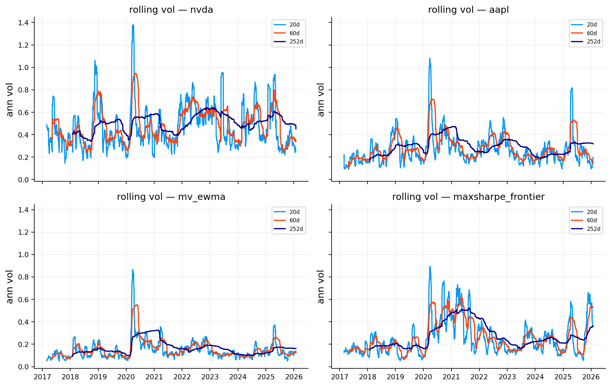
As we can see all of our objects have been more volatile in 2020 due to Covid crash. but the difference is that our two stocks have experienced more volatility in crash times and our diversified portfolios were able to manage the volatility in those times better and had lower effect from crashes. And as we can see Nvidia has the most noise and movement and high volatility overtime and our MinVar model with EWMA covariance managed to control volatility overtime better than all the other objects.
5) distribution shape and tail diagnostics
performance ratios (sharpe/sortino) do not tell you what the return distribution looks like. in the metrics that we analyzed we only work with variance and mean. not the real shape and behavior of distribution. two strategies can have the same sharpe but very different crash behavior.
5.1 skewness
skewness measures asymmetry. using centered moments:
\[ \text{skew} = \frac{\mathbb{e}[(r-\mu)^3]}{\sigma^3} \]
- negative skew can mean occasional large negative days (crash)
- positive skew can mean occasional large positive days (lottery-like)
5.2 excess kurtosis
kurtosis measures tail heaviness relative to normal:
\[ \text{kurt} = \frac{\mathbb{e}[(r-\mu)^4]}{\sigma^4} - 3 \]
the “\(-3\)” makes normal distribution kurtosis equal to \(0\) (“excess kurtosis”).
5.3 tail ratio (quantile-based)
a simple, robust tail comparison is:
\[ \text{tail ratio} = \left|\frac{q_{0.95}}{q_{0.05}}\right| \]
where \(q_p\) is the \(p\)-quantile of daily returns. if the left tail is much larger in magnitude than the right tail, the ratio drops. If we have bigger left tail than right tail, it means we have more extreme negative returns than extreme possitive which can be a sign of risk.
5.4 worst-day averages
another tail measure that can be used is:
- worst 1-day return: \(\min_t r_t\)
- average of worst 5 days: mean of the 5 smallest returns
- average of worst 10 days: mean of the 10 smallest returns
these are easy for users to understand what does a bad week look like without introducing a full scenario model.
in below we get to more advanced models for these types of risk with VaR.
shape_rows = []
for name, r in obj.items():
x = pd.Series(r).dropna()
q05 = float(x.quantile(0.05))
q95 = float(x.quantile(0.95))
tail_ratio = float(abs(q95 / q05)) if abs(q05) > 1e-12 else np.nan
worst_1d = float(x.min()) if len(x) else np.nan
worst_5d_avg = float(x.nsmallest(5).mean()) if len(x) >= 5 else np.nan
worst_10d_avg = float(x.nsmallest(10).mean()) if len(x) >= 10 else np.nan
shape_rows.append({
"object": name,
"skew": float(x.skew()) if len(x) else np.nan,
"excess_kurtosis": float(x.kurt()) if len(x) else np.nan,
"tail_ratio_95_05": tail_ratio,
"worst_1d": worst_1d,
"worst_5d_avg": worst_5d_avg,
"worst_10d_avg": worst_10d_avg,
})
shape_tbl = pd.DataFrame(shape_rows).set_index("object").sort_index()
display(shape_tbl.round(4))| skew | excess_kurtosis | tail_ratio_95_05 | worst_1d | worst_5d_avg | worst_10d_avg | |
|---|---|---|---|---|---|---|
| object | ||||||
| AAPL | 0.1655 | 6.8540 | 0.9931 | -0.1286 | -0.0999 | -0.0850 |
| MS-FG EWMA Mom | -0.1685 | 5.6565 | 1.0078 | -0.1248 | -0.1028 | -0.0855 |
| MinVar EWMA | -0.3344 | 19.3083 | 1.0040 | -0.0974 | -0.0751 | -0.0571 |
| NVDA | 0.1793 | 5.2051 | 1.0930 | -0.1875 | -0.1605 | -0.1310 |
Looks like MinVar EWMA doesn’t have the best shape if we use skew and kurt, but this is because it’s distribution is closer to 0 and every little extreme loss can drive the skew and kurt to bad situation. based on kurtosis, all of the objects are fat tailed but the amount of losses that we take from tail is different for each object. When it comes to see how much loss we take in worst days we again see that MinVar EWMA has lower loss and nvidia again has the most loss. and from these measure our maxsharpe and apple are very close to eachother.
6) cumulative performance and drawdown
6.1 drawdown
drawdown measures how far we get below the previous peak and how much time does it take to get back to peak.
we define peak nav as:
\[ \text{peak}_t = \max_{u \le t} \text{nav}_u \]
then drawdown is:
\[ \text{dd}_t = \frac{\text{nav}_t}{\text{peak}_t} - 1 \]
so drawdown is \(0\) at peaks and negative otherwise.
drawdown analysis answers: - how deep are losses during stress? - how long does it take to recover? - are drawdowns frequent but shallow, or rare but huge?
def dd_series(r):
nav = nav_series(r)
return nav / nav.cummax() - 1.0
fig, ax = plt.subplots(2, 1, figsize=(10, 6), sharex=True)
for name, r in obj.items():
nav = nav_series(r)
ax[0].plot(nav.index, nav.values, color=obj_colors[name], label=name)
ax[0].set_title("cumulative nav")
ax[0].set_ylabel("nav")
ax[0].legend(ncol=4)
for name, r in obj.items():
dd = dd_series(r)
ax[1].plot(dd.index, dd.values, color=obj_colors[name], label=name)
ax[1].axhline(0.0, color="#444", lw=1)
ax[1].set_title("drawdown")
ax[1].set_ylabel("drawdown")
ax[1].set_xlabel("date")
ax[1].legend(ncol=4)
plt.tight_layout()
plt.show()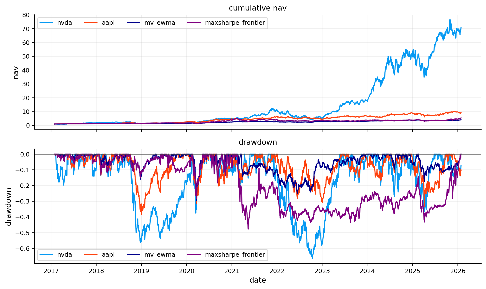
6.2 drawdown episode
the drawdown time-series is great visually, but a user also needs events. we want to know exactly what were the worst drawdowns, when did they start, and how long did they last
an episode starts when drawdown becomes negative and ends when nav reaches the last peak (drawdown returns to \(0\)).
for each episode \(k\) we record: - start date \(t_k^{start}\) - end date \(t_k^{end}\) - depth: \(\min_{t \in [t_k^{start}, t_k^{end}]} \text{dd}_t\) - duration: number of trading days in the episode
def drawdown_episodes(r):
dd = dd_series(r)
in_dd = False
start_i = None
out = []
for i, v in enumerate(dd.values):
if v < 0 and not in_dd:
in_dd = True
start_i = i
if v == 0 and in_dd:
end_i = i
seg = dd.iloc[start_i:end_i]
out.append((seg.index[0], seg.index[-1], float(seg.min()), int(len(seg))))
in_dd = False
if in_dd:
seg = dd.iloc[start_i:]
out.append((seg.index[0], seg.index[-1], float(seg.min()), int(len(seg))))
return pd.DataFrame(out, columns=["start", "end", "depth", "duration"])
def avg_recovery_time(r):
nav = nav_series(r)
peak = nav.cummax()
dd = nav / peak - 1
rec_times = []
in_dd = False
t0 = None
for i, v in enumerate(dd.values):
if v < 0 and not in_dd:
in_dd = True
t0 = i
if v == 0 and in_dd:
rec_times.append(i - t0)
in_dd = False
return float(np.mean(rec_times)) if len(rec_times) else np.nan
dd_rows = []
for name, r in obj.items():
x = pd.Series(r).dropna()
dd = dd_series(x)
ep = drawdown_episodes(x)
longest_dd_days = int(ep["duration"].max()) if len(ep) else 0
dd_rows.append({
"object": name,
"max_dd": float(dd.min()) if len(dd) else np.nan,
"longest_dd_days": longest_dd_days,
"avg_recovery_days": avg_recovery_time(x),
})
dd_summary_tbl = pd.DataFrame(dd_rows).set_index("object").sort_index()
display(dd_summary_tbl.round(4))| max_dd | longest_dd_days | avg_recovery_days | |
|---|---|---|---|
| object | |||
| AAPL | -0.3852 | 354 | 21.2234 |
| MS-FG EWMA Mom | -0.4422 | 977 | 25.3415 |
| MinVar EWMA | -0.2868 | 153 | 12.4774 |
| NVDA | -0.6634 | 373 | 18.4019 |
episodes_rows = []
for name, r in obj.items():
ep = drawdown_episodes(r).sort_values("depth")
ep = ep.head(2).copy()
ep.insert(0, "object", name)
episodes_rows.append(ep)
episodes_tbl = pd.concat(episodes_rows, axis=0).reset_index(drop=True)
display(episodes_tbl)| object | start | end | depth | duration | |
|---|---|---|---|---|---|
| 0 | NVDA | 2021-11-30 | 2023-05-24 | -0.663351 | 373 |
| 1 | NVDA | 2018-10-02 | 2020-02-13 | -0.560400 | 344 |
| 2 | AAPL | 2018-10-04 | 2019-10-09 | -0.385177 | 255 |
| 3 | AAPL | 2024-12-27 | 2025-10-17 | -0.333607 | 202 |
| 4 | MinVar EWMA | 2020-02-19 | 2020-05-28 | -0.286807 | 70 |
| 5 | MinVar EWMA | 2022-04-21 | 2022-10-27 | -0.149735 | 132 |
| 6 | MS-FG EWMA Mom | 2021-03-16 | 2025-02-03 | -0.442167 | 977 |
| 7 | MS-FG EWMA Mom | 2025-02-19 | 2025-10-30 | -0.351537 | 177 |
From the plot, we have the most drawdown in Nvidia. it means in around 2022 we reached our peak in nvidia and then it came down around 66% in 2022 before going up and reaching it’s last peak again. this is the part that makes keeping nvidia stocks hard. you would have earned a lot of money from Nvidia Only if you kept it through the 50-60% loss in 2019 and 2022. Apple seems to have better performance than maxsharpe in drawdown. and MinVar EWMA has the most stable performance and the least max drawdown. below we get to more details about drawdown.
looks like MaxSharpe diversification isn’t as good for reducing drawdown and negative effects of crashes like covid, but in some times like 2019 that both stocks have huge drawdown that can be a market effect, it doesn’t have that much drawdown.
7) Value-at-risk (VaR) and expected shortfall (ES or CVaR)
We analyzed tail and distribution of objects for risk and average worst days to answer On bad days, how large can losses get and how severe are losses once we enter the tail
If daily simple returns be \(r_t\) (\(r_t=-0.02\) means a \(-2\%\) return in one day).
We choose a tail probability \(\alpha\) (common one is \(\alpha=0.05\) for the worst 5% of days).
7.1 left-tail quantile
We define the left-tail quantile \(q_\alpha\) of the return distribution as the threshold such that only an \(\alpha\) fraction of observations fall below it:
\[ P(r \le q_\alpha(r)) = \alpha. \]
Because this is the left tail, \(q_\alpha(r)\) is typically negative (a loss).
Risk reports often present tail risk as a positive loss magnitude for readability.
7.2 value-at-risk (VaR)
VaR is a threshold loss:
Using the quantile definition:
\[ \text{VaR}_\alpha = -q_\alpha(r). \]
For example if \(\alpha=0.05\) - If \(\text{VaR}_{0.05}=2.1\%\), then on 95% of days the loss is no worse than 2.1%. - On the worst 5% of days, losses are worse than 2.1%. - This means we should except this asset to have more than 2.1% loss in the worst 5% of days. It’s rare but it happens and it’s importnant to know how much loss we except as a measure of risk.
The problem is that VaR tells you where the tail begins, but not how large losses are inside the tail.
7.3 expected shortfall (ES) / conditional VaR
Expected Shortfall (ES) measures tail severity by averaging losses beyond VaR:
\[ \text{ES}_\alpha = -E\!\left[r \mid r \le q_\alpha(r)\right]. \]
If \(\alpha=0.05\): - If \(\text{ES}_{0.05}=3.4\%\), then among the worst 5% of days, the average loss is 3.4%.
- VaR is a cutoff (one quantile). It tells us what the best return in the worst 5% losses are.
- ES is a severity measure. it tells us the average loss we should except in the worst 5% of losses.
ES is always bigger (or maybe equal) than VaR. If ES is much larger than VaR, the distribution has a heavier left tail (more extreme losses after crossing the threshold).
7.4 estimation methods used in this report
We report a comparison table for \(\alpha=0.05\) using two other estimators: 1) Cornish–Fisher (CF) adjusted quantiles 2) Filtered historical simulation (FHS) with EWMA volatility
A single VaR/ES estimate can be fragile, so comparing multiple approaches helps users see a plausible range.
7.4.1 cornish–fisher (CF): non-normal quantile correction using skewness and kurtosis
CF starts from the normal quantile and adjusts it to reflect skewness and fat tails.
(a) standardize returns
From a sample window, estimate: - \(\mu\) (sample mean) and \(\sigma\) (sample standard deviation) - standardized values \(x_t = (r_t-\mu)/\sigma\)
Compute standardized skewness \(S\) and excess kurtosis \(K\):
\[ S = E[X^3] \approx \frac{1}{T}\sum_{t=1}^T x_t^3, \qquad K = E[X^4]-3 \approx \frac{1}{T}\sum_{t=1}^T x_t^4 - 3. \]
(b) adjust the normal quantile
We set \(z = z_\alpha = \Phi^{-1}(\alpha)\) as the standard normal \(\alpha\)-quantile.
A commonly used CF expansion is:
\[ z_{\text{CF}} = z +\frac{1}{6}(z^2-1)S +\frac{1}{24}(z^3-3z)K -\frac{1}{36}(2z^3-5z)S^2. \]
Then the CF return quantile is:
\[ q_\alpha^{\text{CF}}(r) = \mu + \sigma z_{\text{CF}}. \]
So the CF VaR is:
\[ \text{VaR}_\alpha^{\text{CF}} = -\left(\mu + \sigma z_{\text{CF}}\right). \]
(c) Cornish Fisher ES
CF primarily provides a corrected quantile (VaR).
A common practical ES approximation is to compute ES empirically using the CF cutoff:
We first compute \(q_\alpha^{\text{CF}}(r)\)
and then average sample returns below that cutoff:
\[ \text{ES}_\alpha^{\text{CF}} \approx -\frac{1}{|\mathcal{T}_\alpha^{\text{CF}}|}\sum_{t\in \mathcal{T}_\alpha^{\text{CF}}} r_t, \qquad \mathcal{T}_\alpha^{\text{CF}}=\{t:r_t\le q_\alpha^{\text{CF}}(r)\}. \]
This model incorporates skewness/kurtosis (non-normality), but approximation can be unstable if skew/kurt estimates are noisy or tails are extreme
negative skew (\(S<0\)) usually worsens left-tail quantiles positive excess kurtosis (\(K>0\)) deepens tail risk vs normal
7.4.2 historical simulation (HS)
HS is the most direct approach: it treats the observed return window as the empirical distribution.
The HS quantile is the empirical quantile
\[ q_\alpha^{\text{HS}}(r) = \text{EmpQuantile}_\alpha(\{r_t\}_{t=1}^T), \]
so
\[ \text{VaR}_\alpha^{\text{HS}} = -q_\alpha^{\text{HS}}(r). \]
And HS ES is:
\[ \text{ES}_\alpha^{\text{HS}} = -E[r \mid r \le q_\alpha^{\text{HS}}(r)] \approx -\frac{1}{|\mathcal{T}_\alpha|}\sum_{t\in \mathcal{T}_\alpha} r_t. \]
This moodel can be sensitive to the chosen window, and to regime changes
7.4.3 filtered historical simulation (FHS): volatility-adjusted tail estimation
HS assumes the return distribution is stable across time.
In reality, returns show volatility clustering (calm vs turbulent periods).
With FHS we address this by filtering out time-varying volatility before sampling the tail.
EWMA volatility filter
There are many ways for filtering. In this project we use this approach:
We estimate conditional variance using EWMA:
\[ \sigma_t^2 = \lambda \sigma_{t-1}^2 + (1-\lambda)r_{t-1}^2, \]
where \(\lambda\in(0,1)\) is the decay parameter (we set as \(\lambda\approx 0.94\)).
FHS expected shortfall
\[ \text{ES}_{\alpha,t+1}^{\text{FHS}} = -\left(\mu_{t+1} + \sigma_{t+1} \, E[\varepsilon \mid \varepsilon \le q_\alpha(\varepsilon)]\right). \]
Empirically:
\[ E[\varepsilon \mid \varepsilon \le q_\alpha(\varepsilon)] \approx \frac{1}{|\mathcal{T}_\alpha^\varepsilon|} \sum_{t\in \mathcal{T}_\alpha^\varepsilon}\varepsilon_t. \]
So:
\[ \text{ES}_{\alpha,t+1}^{\text{FHS}} \approx -\left(\mu_{t+1} + \sigma_{t+1} \frac{1}{|\mathcal{T}_\alpha^\varepsilon|} \sum_{t\in \mathcal{T}_alpha^\varepsilon}\varepsilon_t\right). \]
This model adapts to volatility regimes and has better behavior when today’s volatility differs from the historical average of volatility, but it depends what model we use and can be different
def hist_var_es(r, alpha=0.05):
x = pd.Series(r).dropna()
q = x.quantile(alpha)
es = x[x <= q].mean()
return -float(q), -float(es)
def cf_var_es(r, alpha=0.05, n_sim=70000, seed=7):
x = pd.Series(r).dropna()
mu = float(x.mean())
sd = float(x.std(ddof=1))
if sd <= 1e-12:
return np.nan, np.nan
s = float(x.skew())
k = float(x.kurt())
z = normaldist().inv_cdf(alpha)
zc = z + (z**2 - 1)*s/6 + (z**3 - 3*z)*k/24 - (2*z**3 - 5*z)*(s**2)/36
q = mu + sd * zc
rng = np.random.default_rng(seed)
zs = rng.standard_normal(n_sim)
za = zs + (zs**2 - 1)*s/6 + (zs**3 - 3*zs)*k/24 - (2*zs**3 - 5*zs)*(s**2)/36
rs = mu + sd * za
es = rs[rs <= q].mean()
return -float(q), -float(es)
def fhs_var_es(r, alpha=0.05, lam=0.94):
x = pd.Series(r).dropna().astype(float)
mu = float(x.mean())
e = x - mu
sig = np.zeros(len(e), dtype=float)
sig[0] = max(float(e.std(ddof=1)), 1e-6)
for t in range(1, len(e)):
sig[t] = np.sqrt(lam * sig[t - 1]**2 + (1 - lam) * e.iloc[t - 1]**2)
z = e.to_numpy() / np.where(sig > 1e-12, sig, np.nan)
z = z[np.isfinite(z)]
qz = np.quantile(z, alpha)
ez = z[z <= qz].mean()
sn = sig[-1]
return float(-(mu + sn * qz)), float(-(mu + sn * ez))
var_rows = []
for name, r in obj.items():
x = pd.Series(r).dropna()
hv, he = hist_var_es(x, 0.05)
cv, ce = cf_var_es(x, 0.05)
fv, fe = fhs_var_es(x, 0.05)
var_rows.append({
"object": name,
"hist_var5": hv,
"hist_es5": he,
"cf_var5": cv,
"cf_es5": ce,
"fhs_var5": fv,
"fhs_es5": fe,
})
var_tbl = pd.DataFrame(var_rows).set_index("object").sort_index()
display(var_tbl.round(4))| hist_var5 | hist_es5 | cf_var5 | cf_es5 | fhs_var5 | fhs_es5 | |
|---|---|---|---|---|---|---|
| object | ||||||
| AAPL | 0.0287 | 0.0425 | 0.0261 | 0.0547 | 0.0205 | 0.0299 |
| MS-FG EWMA Mom | 0.0293 | 0.0437 | 0.0281 | 0.0544 | 0.0367 | 0.0512 |
| MinVar EWMA | 0.0133 | 0.0218 | 0.0124 | 0.0490 | 0.0086 | 0.0132 |
| NVDA | 0.0466 | 0.0691 | 0.0446 | 0.0839 | 0.0286 | 0.0409 |
fig, axes = plt.subplots(2, 2, figsize=(10, 6), sharex=True)
axes = axes.ravel()
for i, (name, r) in enumerate(obj.items()):
ax = axes[i]
x = pd.Series(r).dropna()
hv, he = hist_var_es(x, 0.05)
ax.hist(x.values, bins=60, density=True, alpha=0.75)
ax.axvline(-hv, lw=2.0, ls="--", color=obj_colors[name], label="vaR 5% (hist)")
ax.axvline(-he, lw=2.0, ls=":", color=obj_colors[name], label="es 5% (hist)")
ax.set_title(f"return distribution — {name}")
ax.legend()
plt.tight_layout()
plt.show()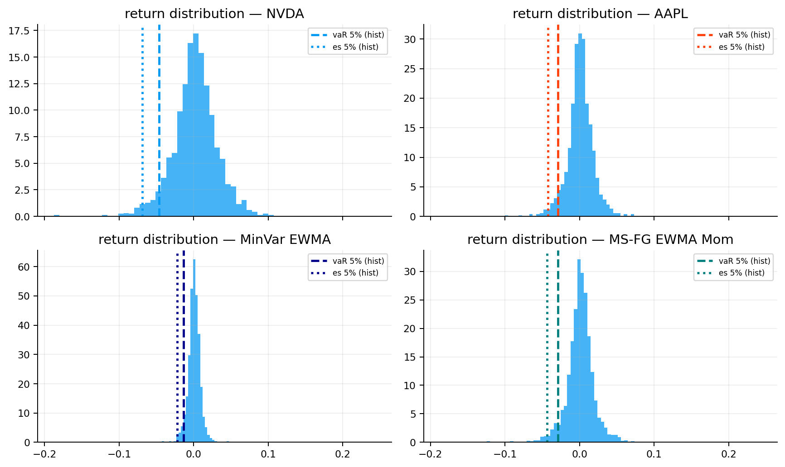
We can see from the table that models give us different results. If we only cosider Historic VaR, We might think that Apple is more risky than MaxSharpe, but other models show otherwise. again we see that the loss of Nvidia is the most in most of the models. and MinVar EWMA has controlled the risk the best way.
8) VaR backtesting (Model risk)
A VaR model makes a testable promise. For a 5% VaR, Losses should exceed the VaR threshold about 5% of the time.
Backtesting checks whether that promise holds in realized data.
8.1 breach indicator (what counts as a VaR failure)
A VaR breach occurs when the realized return is worse than the VaR threshold:
\[ r_t < -\text{VaR}_{\alpha,t}. \]
We define the breach indicator:
\[ b_t = \mathbb{1}\!\left[r_t < -\text{VaR}_{\alpha,t}\right], \]
where \(b_t=1\) means a breach happened, and \(b_t=0\) otherwise.
We summarize breaches using: - breach count: \(x = \sum_{t=1}^n b_t\) - breach rate: \(\hat p = x/n\) - longest breach streak: \(\max\) number of consecutive \(b_t=1\) (a simple clustering diagnostic)
If the VaR model is correct, we expect \(\hat p \approx \alpha\) over a long sample. If breaches happen in streaks, the model may be underreacting to volatility regime changes (clustering risk).
8.2 Kupiec test: unconditional coverage (frequency)
The Kupiec (POF) test checks whether breaches occur with the correct long-run frequency.
If we have: - \(n\) = number of test days - \(x\) = number of breaches - \(\hat p = x/n\) = observed breach rate - \(p = \alpha\) = model-implied breach probability (5%)
Kupiec’s likelihood ratio statistic is:
The log-likelihood under the null (correct coverage) is:
\[ \ell_0 = (n-x)\log(1-p) + x\log(p). \]
The log-likelihood under the alternative (best-fitting rate) is:
\[ \ell_1 = (n-x)\log(1-\hat p) + x\log(\hat p). \]
Kupiec’s likelihood-ratio statistic is:
\[ \text{LR}_{uc} = -2(\ell_0-\ell_1), \qquad \text{LR}_{uc}\sim \chi^2(1)\ \text{under }H_0. \]
it means: - large \(\text{LR}_{uc}\) (small p-value) means the breach frequency is wrong: - too many breaches means VaR is too small (underestimates risk) - too few breaches means VaR is too conservative
8.3 Christoffersen test: independence / clustering
Correct frequency alone is not enough, breaches should also be independent over time.
If breaches have clustering, the VaR model may fail during volatility spikes or regime shifts. se we test independence
The Christoffersen independence test treats the breach sequence \(b_t\) as a two-state process (0 = no breach, 1 = breach) and checks whether transitions depend on the previous day.
Count transitions: - \(n_{00}\): number of times \(b_{t-1}=0 \to b_t=0\) - \(n_{01}\): number of times \(b_{t-1}=0 \to b_t=1\) - \(n_{10}\): number of times \(b_{t-1}=1 \to b_t=0\) - \(n_{11}\): number of times \(b_{t-1}=1 \to b_t=1\)
Estimate transition probabilities:
\[ \pi_{01} = \frac{n_{01}}{n_{00}+n_{01}}, \qquad \pi_{11} = \frac{n_{11}}{n_{10}+n_{11}}. \]
If breaches are independent, the probability of a breach tomorrow does not depend on whether there was a breach today, so:
\[ H_0: \pi_{01} = \pi_{11}. \]
Log-likelihood under independence: \[ \ell_0 = (n_{00}+n_{10})\log(1-\pi) + (n_{01}+n_{11})\log(\pi). \]
Log-likelihood under dependence (two transition probabilities): \[ \ell_1 = n_{00}\log(1-\pi_{01}) + n_{01}\log(\pi_{01}) + n_{10}\log(1-\pi_{11}) + n_{11}\log(\pi_{11}). \]
The test statistic is: \[ \text{LR}_{ind} = -2(\ell_0-\ell_1), \qquad \text{LR}_{ind}\sim \chi^2(1)\ \text{under }H_0. \]
We define likelihoods: - under independence (Bernoulli with constant probability \(\hat p\)):
\[ L_0 = (1-\hat p)^{n_{00}+n_{10}} \hat p^{n_{01}+n_{11}} \]
- under first-order dependence (different transition probabilities):
\[ L_1 = (1-\pi_{01})^{n_{00}} \pi_{01}^{n_{01}} (1-\pi_{11})^{n_{10}} \pi_{11}^{n_{11}}. \]
Christoffersen’s likelihood ratio statistic:
\[ \text{LR}_{ind} = -2\ln\left(\frac{L_0}{L_1}\right) \qquad \text{LR}_{ind}\sim \chi^2(1) \text{ under } H_0. \]
small p-value means breaches are clustered (depend on previous breach status) clustering is a common sign that the VaR model is not adapting fast enough to changing volatility
We report p-values for:
- Kupiec (coverage): is breach frequency close to \(\alpha\)
- Christoffersen (independence): are breaches unclustered
A well-specified VaR model typically has: - coverage p-value not too small (frequency is plausible) - independence p-value not too small (no strong clustering)
Small p-values suggest misspecification: wrong level of risk, volatility dynamics not captured, or regime changes.
alpha = 0.05
lookback = 252
bt_methods = ["hist", "cf", "fhs"]
def chi2_sf(x, df):
return float(chi2.sf(x, df))
def rolling_var_quantile(r, alpha=0.05, lookback=252, method="hist", cf_n_sim=15000, cf_seed=7, fhs_lambda=0.94):
x = pd.Series(r).dropna().astype(float)
if len(x) < lookback + 1:
return pd.Series(dtype=float)
m = str(method).strip().lower()
q = pd.Series(np.nan, index=x.index, dtype=float)
for i in range(lookback, len(x)):
w = x.iloc[i - lookback:i]
if m == "hist":
v, _ = hist_var_es(w, alpha=alpha)
elif m == "cf":
v, _ = cf_var_es(w, alpha=alpha, n_sim=cf_n_sim, seed=cf_seed)
elif m == "fhs":
v, _ = fhs_var_es(w, alpha=alpha, lam=fhs_lambda)
else:
raise ValueError("method must be one of {'hist', 'cf', 'fhs'}")
q.iloc[i] = -float(v) if np.isfinite(v) else np.nan
return q
def longest_true_streak(mask):
m = np.asarray(mask, dtype=bool)
best = 0
cur = 0
for v in m:
if v:
cur += 1
best = max(best, cur)
else:
cur = 0
return int(best)
def kupiec_test(breach, alpha=0.05):
b = np.asarray(breach, dtype=bool)
n = int(b.size)
x = int(b.sum())
if n <= 0:
return np.nan, np.nan
p = float(alpha)
eps = 1e-12
ph = x / n
ph = min(max(ph, eps), 1.0 - eps)
ll0 = (n - x) * np.log1p(-p) + x * np.log(p)
ll1 = (n - x) * np.log1p(-ph) + x * np.log(ph)
lr = float(-2.0 * (ll0 - ll1))
pv = chi2_sf(lr, df=1)
return lr, pv
def christoffersen_independence(breach):
b = np.asarray(breach, dtype=int)
if b.size < 3:
return np.nan, np.nan
b0 = b[:-1]
b1 = b[1:]
n00 = int(((b0 == 0) & (b1 == 0)).sum())
n01 = int(((b0 == 0) & (b1 == 1)).sum())
n10 = int(((b0 == 1) & (b1 == 0)).sum())
n11 = int(((b0 == 1) & (b1 == 1)).sum())
eps = 1e-12
pi01 = n01 / (n00 + n01 + eps)
pi11 = n11 / (n10 + n11 + eps)
pi = (n01 + n11) / (n00 + n01 + n10 + n11 + eps)
pi01 = min(max(pi01, eps), 1.0 - eps)
pi11 = min(max(pi11, eps), 1.0 - eps)
pi = min(max(pi, eps), 1.0 - eps)
ll0 = (n00 + n10) * np.log1p(-pi) + (n01 + n11) * np.log(pi)
ll1 = (
n00 * np.log1p(-pi01) + n01 * np.log(pi01)
+ n10 * np.log1p(-pi11) + n11 * np.log(pi11)
)
lr = float(-2.0 * (ll0 - ll1))
pv = chi2_sf(lr, df=1)
return lr, pv
def quantile_loss(ret, q, alpha=0.05):
z = pd.concat([pd.Series(ret).rename("ret"), pd.Series(q).rename("q")], axis=1).dropna()
if len(z) == 0:
return np.nan
e = z["ret"] - z["q"]
loss = e * (alpha - (e < 0).astype(float))
return float(loss.mean())
def breach_stats(r, alpha=0.05, lookback=252, method="hist"):
x = pd.Series(r).dropna().astype(float)
q = rolling_var_quantile(x, alpha=alpha, lookback=lookback, method=method)
z = pd.concat([x.rename("ret"), q.rename("var_q")], axis=1).dropna()
br = z["ret"] < z["var_q"]
lr_uc, pv_uc = kupiec_test(br, alpha=alpha)
lr_ind, pv_ind = christoffersen_independence(br)
idx = np.flatnonzero(br.to_numpy())
gaps = np.diff(idx) if idx.size >= 2 else np.array([])
rate = float(br.mean())
return {
"series": z,
"breach": br,
"count": int(br.sum()),
"rate": rate,
"coverage_error": float(rate - alpha),
"abs_coverage_error": float(abs(rate - alpha)),
"longest_streak": longest_true_streak(br.to_numpy()),
"avg_gap": float(np.mean(gaps)) if gaps.size else np.nan,
"med_gap": float(np.median(gaps)) if gaps.size else np.nan,
"kupiec_lr": lr_uc,
"kupiec_p": pv_uc,
"christ_lr": lr_ind,
"christ_p": pv_ind,
"quantile_loss": quantile_loss(z["ret"], z["var_q"], alpha=alpha),
}
rows = []
stats_map = {}
for name, r in obj.items():
stats_map[name] = {}
for m in bt_methods:
st = breach_stats(r, alpha=alpha, lookback=lookback, method=m)
stats_map[name][m] = st
rows.append({
"object": name,
"method": m,
"breach_count": st["count"],
"breach_rate": st["rate"],
"coverage_error": st["coverage_error"],
"abs_coverage_error": st["abs_coverage_error"],
"longest_breach_streak": st["longest_streak"],
"avg_gap_days": st["avg_gap"],
"kupiec_p": st["kupiec_p"],
"christoffersen_p": st["christ_p"],
"quantile_loss": st["quantile_loss"],
})
var_bt_tbl = pd.DataFrame(rows).set_index(["object", "method"]).sort_index()
var_bt_tbl["accuracy_rank"] = np.nan
var_bt_tbl["accuracy_score"] = np.nan
var_bt_tbl["is_best"] = False
for name, g in var_bt_tbl.groupby(level=0, sort=False):
abs_cov = g["abs_coverage_error"]
qloss = g["quantile_loss"]
kup = g["kupiec_p"].fillna(-np.inf)
chrp = g["christoffersen_p"].fillna(-np.inf)
r_abs = abs_cov.rank(ascending=True, method="min", na_option="bottom")
r_ql = qloss.rank(ascending=True, method="min", na_option="bottom")
r_k = kup.rank(ascending=False, method="min")
r_c = chrp.rank(ascending=False, method="min")
rank_sum = (r_abs + r_ql + r_k + r_c).astype(float)
acc_rank = rank_sum.rank(ascending=True, method="min")
acc_score = 1.0 / (1.0 + rank_sum)
var_bt_tbl.loc[g.index, "accuracy_rank"] = acc_rank.to_numpy(dtype=float)
var_bt_tbl.loc[g.index, "accuracy_score"] = acc_score.to_numpy(dtype=float)
best_idx = pd.DataFrame(
{
"rank_sum": rank_sum,
"abs_cov": abs_cov,
"qloss": qloss,
"kupiec": kup,
"christ": chrp,
"method_name": [idx[1] for idx in g.index],
},
index=g.index,
).sort_values(
by=["rank_sum", "abs_cov", "qloss", "kupiec", "christ", "method_name"],
ascending=[True, True, True, False, False, True],
).index[0]
var_bt_tbl.loc[best_idx, "is_best"] = True
display(var_bt_tbl.round(4))
best_method_map = {obj_name: method for obj_name, method in var_bt_tbl[var_bt_tbl["is_best"]].index}
breach_map = {}
for name, r in obj.items():
m = best_method_map.get(name, "hist")
st = stats_map[name][m]
st["method"] = m
breach_map[name] = st
var_bt_tbl_pdf = var_bt_tbl.rename(columns={
"breach_count": "breaches",
"breach_rate": "rate",
"longest_breach_streak": "max_streak",
"avg_gap_days": "avg_gap_d",
"kupiec_p": "kupiec_p",
"christoffersen_p": "christoffersen_p",
})| breach_count | breach_rate | coverage_error | abs_coverage_error | longest_breach_streak | avg_gap_days | kupiec_p | christoffersen_p | quantile_loss | accuracy_rank | accuracy_score | is_best | ||
|---|---|---|---|---|---|---|---|---|---|---|---|---|---|
| object | method | ||||||||||||
| AAPL | cf | 135 | 0.0672 | 0.0172 | 0.0172 | 4 | 14.9254 | 0.0008 | 0.0002 | 0.0023 | 2.0 | 0.0909 | False |
| fhs | 105 | 0.0523 | 0.0023 | 0.0023 | 3 | 19.2308 | 0.6437 | 0.0011 | 0.0022 | 1.0 | 0.2000 | True | |
| hist | 124 | 0.0617 | 0.0117 | 0.0117 | 4 | 16.2602 | 0.0198 | 0.0002 | 0.0023 | 2.0 | 0.0909 | False | |
| MS-FG EWMA Mom | cf | 117 | 0.0582 | 0.0082 | 0.0082 | 3 | 17.0603 | 0.0983 | 0.0233 | 0.0023 | 2.0 | 0.1000 | False |
| fhs | 110 | 0.0548 | 0.0048 | 0.0048 | 3 | 17.9908 | 0.3353 | 0.1139 | 0.0021 | 1.0 | 0.2000 | True | |
| hist | 118 | 0.0587 | 0.0087 | 0.0087 | 3 | 16.9145 | 0.0801 | 0.0109 | 0.0023 | 3.0 | 0.0833 | False | |
| MinVar EWMA | cf | 103 | 0.0513 | 0.0013 | 0.0013 | 3 | 19.0686 | 0.7949 | 0.0000 | 0.0012 | 2.0 | 0.1250 | False |
| fhs | 108 | 0.0538 | 0.0038 | 0.0038 | 2 | 18.5794 | 0.4449 | 0.0919 | 0.0011 | 1.0 | 0.1429 | True | |
| hist | 116 | 0.0577 | 0.0077 | 0.0077 | 3 | 16.9217 | 0.1199 | 0.0000 | 0.0012 | 3.0 | 0.0833 | False | |
| NVDA | cf | 170 | 0.0846 | 0.0346 | 0.0346 | 3 | 11.8343 | 0.0000 | 0.0009 | 0.0039 | 3.0 | 0.0769 | False |
| fhs | 116 | 0.0577 | 0.0077 | 0.0077 | 2 | 17.3913 | 0.1199 | 0.2037 | 0.0035 | 1.0 | 0.2000 | True | |
| hist | 126 | 0.0627 | 0.0127 | 0.0127 | 3 | 15.9920 | 0.0117 | 0.0344 | 0.0037 | 2.0 | 0.1111 | False |
fig, axes = plt.subplots(2, 2, figsize=(10, 6), sharex=True, sharey=False)
axes = axes.ravel()
for i, name in enumerate(obj.keys()):
ax = axes[i]
z = breach_map[name]["series"]
br = breach_map[name]["breach"]
m = breach_map[name].get("method", "hist")
ax.plot(z.index, z["ret"].values, lw=0.9, alpha=0.85, label="return")
ax.plot(z.index, z["var_q"].values, lw=2.0, label=f"rolling vaR q(5%) [{m}]")
ax.scatter(z.index[br], z.loc[br, "ret"].values, s=12, marker="x", label="breach")
ax.set_title(f"rolling vaR + breaches (best model) - {name}")
ax.set_ylabel("daily return")
ax.legend()
plt.tight_layout()
plt.show()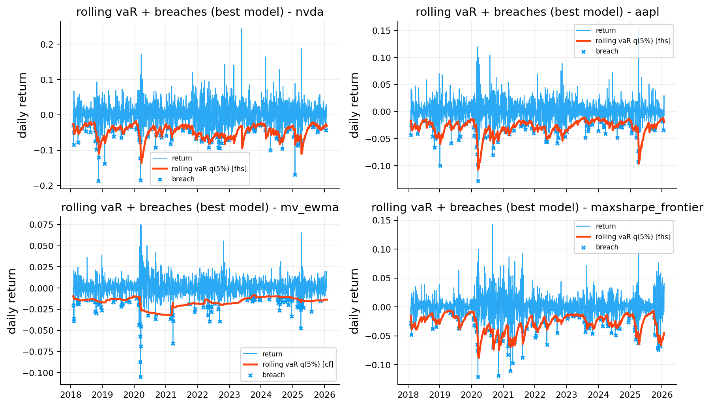
FHS is the most robust method. It delivers accurate unconditional coverage across all tested objects, consistently low quantile loss, and is statistically the best choice in all these 4 objects. Its use of volatility filtering makes it a lot more adaptive than simple Historical Simulation and less assumption dependent than Cornish-Fisher.
All models failed independence tests (except NVDA with FHS). Even the best model produces clustered violations in most portfolios. Relying solely on an unconditional coverage test would be dangerous. a conditional coverage failure means large losses are likely to be followed by more large losses, potentially blowing through capital buffers.
Cornish-Fisher is fragile but works better than Hist in some cases. Its extreme underprediction on NVDA (8.5% breach rate) shows it can misbehave badly when the return distribution is far from normal (NVDA’s high volatility and potential skewness). It only performs good for the well diversified MinVar EWMA portfolio where non normality is milder.
Simple Historical Simulation is a decent fallback. It was never the worst and never the best. It lacks the adaptiveness of FHS.
9) historical stress windows (scenario slices)
instead of hypothetical shocks, we can look at real historical periods like covid crash and see how did each object behave during that exact window, what was the max drawdown inside the window and how much loss we would take in that period if we held these objects.
for this project we use three periods: - the 4th quarter of 2018 - the Covid crash in the first months of 2020 - inflation of 2022
stress_windows = {
"2018_q4": ("2018-10-01", "2018-12-31"),
"2020_covid": ("2020-02-20", "2020-04-30"),
"2022_inflation": ("2022-01-03", "2022-10-31"),
}
stress_rows = []
for wname, (s, e) in stress_windows.items():
s = pd.Timestamp(s)
e = pd.Timestamp(e)
for name, r in obj.items():
x = pd.Series(r).loc[(pd.Series(r).index >= s) & (pd.Series(r).index <= e)].dropna()
if len(x) == 0:
continue
nav = nav_series(x)
dd = nav / nav.cummax() - 1
worst_week = x.resample("W-FRI").sum().min() if len(x) > 5 else np.nan
stress_rows.append({
"window": wname,
"object": name,
"cum_return": float(nav.iloc[-1] - 1),
"max_dd": float(dd.min()),
"worst_day": float(x.min()),
"worst_week": float(worst_week) if np.isfinite(worst_week) else np.nan,
})
stress_tbl = pd.DataFrame(stress_rows).sort_values(["window", "object"]).reset_index(drop=True)display(stress_tbl.round(4))| window | object | cum_return | max_dd | worst_day | worst_week | |
|---|---|---|---|---|---|---|
| 0 | 2018_q4 | AAPL | -0.2988 | -0.3651 | -0.0663 | -0.1140 |
| 1 | 2018_q4 | MS-FG EWMA Mom | -0.1658 | -0.2033 | -0.0416 | -0.0720 |
| 2 | 2018_q4 | MinVar EWMA | -0.0799 | -0.1237 | -0.0287 | -0.0572 |
| 3 | 2018_q4 | NVDA | -0.5245 | -0.5604 | -0.1875 | -0.1988 |
| 4 | 2020_covid | AAPL | -0.0921 | -0.2995 | -0.1286 | -0.1803 |
| 5 | 2020_covid | MS-FG EWMA Mom | -0.0523 | -0.2735 | -0.1221 | -0.1193 |
| 6 | 2020_covid | MinVar EWMA | -0.0704 | -0.2819 | -0.0974 | -0.1391 |
| 7 | 2020_covid | NVDA | -0.0707 | -0.3634 | -0.1846 | -0.1286 |
| 8 | 2022_inflation | AAPL | -0.1329 | -0.2834 | -0.0587 | -0.0830 |
| 9 | 2022_inflation | MS-FG EWMA Mom | -0.1814 | -0.2824 | -0.0857 | -0.1039 |
| 10 | 2022_inflation | MinVar EWMA | 0.0347 | -0.1497 | -0.0396 | -0.0506 |
| 11 | 2022_inflation | NVDA | -0.5408 | -0.6270 | -0.0947 | -0.1709 |
import matplotlib.dates as mdates
fig, axes = plt.subplots(1, len(stress_windows), figsize=(12, 3.5), sharey=True)
if len(stress_windows) == 1:
axes = [axes]
for ax, (wname, (s, e)) in zip(axes, stress_windows.items()):
s = pd.Timestamp(s)
e = pd.Timestamp(e)
mid = s + (e - s) / 2
for name, r in obj.items():
x = pd.Series(r).loc[(pd.Series(r).index >= s) & (pd.Series(r).index <= e)].dropna()
if len(x) == 0:
continue
nav = nav_series(x)
nav = nav / nav.iloc[0]
ax.plot(nav.index, nav.values, lw=1.8, color=obj_colors[name], label=name)
ax.set_title(wname)
ax.set_xlabel("date")
ax.grid(True, alpha=0.2)
ticks = [s, mid, e]
ax.set_xticks(ticks)
ax.xaxis.set_major_formatter(mdates.DateFormatter("%Y-%m-%d"))
ax.tick_params(axis="x", labelrotation=0, labelsize=8)
axes[0].set_ylabel("nav (rebased to 1)")
axes[0].legend(ncol=1, fontsize=8)
plt.tight_layout()
plt.show()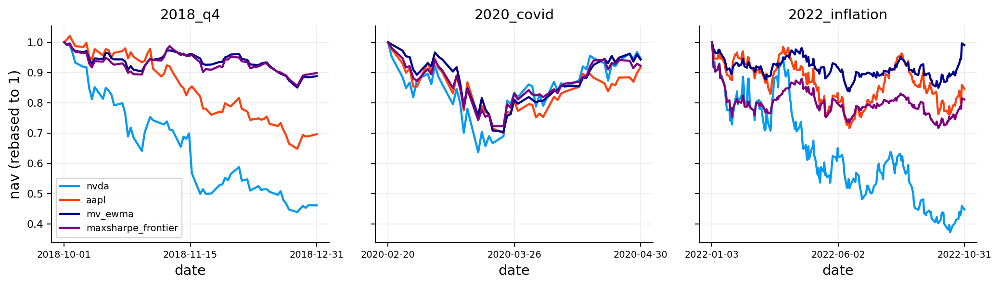
When it comes to these periods, companies get effected directly and these events cause more drops and negative returns in stock prices and diversification seems to be the safer choice. this is one of the rare measures that we can see MaxSharpe performed better than apple.
10) CAPM / market factor decomposition
capm explains returns using a single market factor. here, we use spy data that we imported as our market proxy (S&P 500 ETF).
With this model we assume that any return more than risk free rate of our objects can be explained by market returns and market risk effects on these returns.
From this relationship we can interpret how much each object’s risk is dependent to market risk and we can see if each object has any returns more than market returns that can’t be explained with market risk.
10.1 capm model (daily)
using excess returns:
\[ r^{ex}_{j,t} = \alpha_j + \beta_j\, r^{ex}_{m,t} + \varepsilon_{j,t} \]
where: - \(r^{ex}_{j,t} = r_{j,t} - r_{f,t}\) (excess return of the object) - \(r^{ex}_{m,t} = r_{m,t} - r_{f,t}\) (market = spy) - \(\alpha_j\) is “alpha” (average unexplained excess return) - \(\beta_j\) is market sensitivity - \(\varepsilon\) is the residual
estimation (ols via sklearn)
OLS (ordinary least squares) is a model for minimizing the square of residuals between the prediction and the real data for fitting a linear regression on our data.
\[ \min_{\alpha,\beta} \sum_t \left(r^{ex}_{j,t} - \alpha - \beta r^{ex}_{m,t}\right)^2 \]
the fitted values are:
\[ \hat r^{ex}_{j,t} = \hat\alpha + \hat\beta r^{ex}_{m,t} \]
and \(r^2\) is:
\[ r^2 = 1 - \frac{\sum_t (r^{ex}_{j,t} - \hat r^{ex}_{j,t})^2}{\sum_t (r^{ex}_{j,t} - \bar r^{ex}_j)^2} \]
10.2 Active risk vs benchmark (tracking error and information ratio)
We define active return as performance relative to the benchmark:
\[ a_t = r_t - m_t \]
Then Tracking error (annualized):
\[ TE = \sqrt{ann}\;\sigma(a_t) \]
Information ratio (annualized): \[ IR = \sqrt{ann}\;\frac{E[a_t]}{\sigma(a_t)} \]
- high TE: we deviate a lot from the benchmark (high active risk)
- high IR: we’re rewarded well per unit of active risk
10.3 Up capture and down capture
These measure how the object behaves when the market is up vs down.
Let: - \(\mathcal{U}=\{t: m_t>0\}\) (up-market days) - \(\mathcal{D}=\{t: m_t<0\}\) (down-market days)
Then:
\[ \text{UpCapture}=\frac{E[r_t\mid t\in\mathcal{U}]}{E[m_t\mid t\in\mathcal{U}]}, \qquad \text{DownCapture}=\frac{E[r_t\mid t\in\mathcal{D}]}{E[m_t\mid t\in\mathcal{D}]} \]
- UpCapture > 1: stronger upside participation than the benchmark
- DownCapture > 1: worse downside participation than the benchmark
- < 1 means more calm moves than the benchmark in that regime
the regression scatter plot
- each dot is a day (\(x\) = market excess return, \(y\) = object excess return)
- the fitted line slope is \(\beta\)
- the intercept is \(\alpha\)
capm_rows = []
roll_store = {}
m_ex = pd.Series(market_ret, index=base_idx) - rf_daily
def capm_ols(y, x):
xy = pd.concat([pd.Series(y), pd.Series(x)], axis=1).dropna()
yv = xy.iloc[:, 0].to_numpy(float)
xv = xy.iloc[:, 1].to_numpy(float)
xmat = np.column_stack([np.ones(len(xv)), xv])
coef = np.linalg.lstsq(xmat, yv, rcond=None)[0]
alpha = float(coef[0])
beta = float(coef[1])
yhat = xmat @ coef
ssr = float(((yv - yhat) ** 2).sum())
sst = float(((yv - yv.mean()) ** 2).sum())
r2 = 1 - ssr / sst if sst > 1e-12 else np.nan
return alpha, beta, r2
def rolling_beta_corr(r, m, w):
x = pd.concat([pd.Series(r), pd.Series(m)], axis=1).dropna()
rp = x.iloc[:, 0]
rm = x.iloc[:, 1]
beta = rp.rolling(w).cov(rm) / rm.rolling(w).var()
corr = rp.rolling(w).corr(rm)
beta.name = f"beta_{w}"
corr.name = f"corr_{w}"
return beta, corr
for name, r in obj.items():
y_ex = pd.Series(r, index=base_idx) - rf_daily
xy_ex = pd.concat([m_ex, y_ex], axis=1).dropna()
if len(xy_ex) >= 30:
x_reg = xy_ex.iloc[:, 0].to_numpy(float).reshape(-1, 1)
y_reg = xy_ex.iloc[:, 1].to_numpy(float)
reg = LinearRegression().fit(x_reg, y_reg)
alpha = float(reg.intercept_)
beta = float(reg.coef_[0])
r2 = float(reg.score(x_reg, y_reg))
else:
alpha, beta, r2 = np.nan, np.nan, np.nan
alpha_ann = (1 + alpha) ** ann - 1 if alpha > -0.999 else np.nan
active = (pd.Series(r, index=base_idx) - pd.Series(market_ret, index=base_idx)).dropna()
te = float(active.std(ddof=1) * np.sqrt(ann))
ir = float(active.mean() / active.std(ddof=1) * np.sqrt(ann))
m = pd.Series(market_ret, index=base_idx).dropna()
y = pd.Series(r, index=base_idx).dropna()
xy = pd.concat([y, m], axis=1).dropna()
y_aligned = xy.iloc[:, 0].to_numpy(float)
m_aligned = xy.iloc[:, 1].to_numpy(float)
up_m = m_aligned > 0
dn_m = m_aligned < 0
up_cap = (np.mean(y_aligned[up_m]) / np.mean(m_aligned[up_m]))
dn_cap = (np.mean(y_aligned[dn_m]) / np.mean(m_aligned[dn_m]))
var_m = float(np.var(m_ex.dropna().to_numpy(float), ddof=1))
var_y = float(np.var(y_ex.dropna().to_numpy(float), ddof=1))
sys_share = (beta ** 2) * var_m / var_y
capm_rows.append({
"object": name,
"alpha_daily": alpha,
"alpha_ann": alpha_ann,
"beta": beta,
"r2": r2,
"tracking_error": te,
"information_ratio": ir,
"up_capture": up_cap,
"down_capture": dn_cap,
"systematic_var_share": sys_share,
})
b126, c126 = rolling_beta_corr(y_ex, m_ex, 126)
b252, c252 = rolling_beta_corr(y_ex, m_ex, 252)
roll_store[name] = {"beta_126": b126, "corr_126": c126, "beta_252": b252, "corr_252": c252}
capm_tbl = pd.DataFrame(capm_rows).set_index("object").sort_index()display(capm_tbl.round(4))| alpha_daily | alpha_ann | beta | r2 | tracking_error | information_ratio | up_capture | down_capture | systematic_var_share | |
|---|---|---|---|---|---|---|---|---|---|
| object | |||||||||
| AAPL | 0.0004 | 0.1117 | 1.2284 | 0.5866 | 0.1954 | 0.6806 | 1.2905 | 1.1891 | 0.5866 |
| MS-FG EWMA Mom | 0.0005 | 0.1465 | 0.9853 | 0.3833 | 0.2312 | 0.5838 | 1.1959 | 1.0734 | 0.3833 |
| MinVar EWMA | 0.0002 | 0.0538 | 0.6539 | 0.6133 | 0.1154 | 0.0988 | 0.6573 | 0.5819 | 0.6133 |
| NVDA | 0.0014 | 0.4093 | 1.8388 | 0.4598 | 0.4000 | 1.1068 | 2.1876 | 1.8877 | 0.4598 |
fig, axes = plt.subplots(2, 2, figsize=(11, 7), sharex=True, sharey=True)
axes = axes.ravel()
for i, name in enumerate(obj.keys()):
ax = axes[i]
y_ex = (pd.Series(obj[name], index=base_idx) - rf_daily).dropna()
m_ex = (pd.Series(market_ret, index=base_idx) - rf_daily).dropna()
xy = pd.concat([m_ex, y_ex], axis=1).dropna()
x = xy.iloc[:, 0].to_numpy(float)
y = xy.iloc[:, 1].to_numpy(float)
alpha = capm_tbl.loc[name, "alpha_daily"]
beta = capm_tbl.loc[name, "beta"]
r2 = capm_tbl.loc[name, "r2"]
ax.scatter(x, y, s=10, alpha=0.15, color=palette[7])
xs = np.linspace(np.percentile(x, 1), np.percentile(x, 99), 200)
ys = alpha + beta * xs
ax.plot(xs, ys, lw=2.2, color=obj_colors[name])
ax.axhline(0.0, color="#444", lw=1)
ax.axvline(0.0, color="#444", lw=1)
ax.set_title(f"capm fit — {name}")
ax.set_xlabel("market excess return")
ax.set_ylabel("asset excess return")
ax.text(
0.02, 0.98,
f"alpha(d): {alpha:.4f}\n"
f"beta: {beta:.3f}\n"
f"r2: {r2:.3f}",
transform=ax.transAxes,
va="top",
fontsize=9,
bbox=dict(boxstyle="round", facecolor="white", alpha=0.75),
)
plt.tight_layout()
plt.show()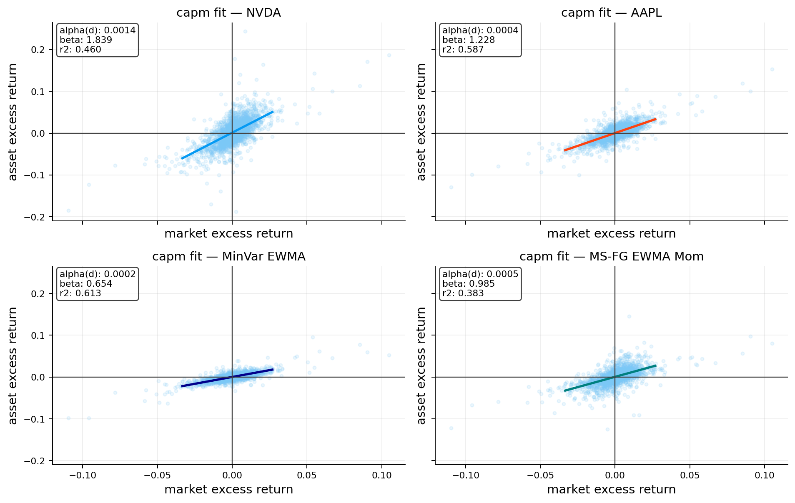
fig, axes = plt.subplots(2, 1, figsize=(11, 6), sharex=True)
for name in obj.keys():
axes[0].plot(roll_store[name]["beta_252"], lw=2.0, color=obj_colors[name], label=f"{name} 252d")
axes[0].axhline(1.0, color="#444", lw=1, ls="--")
axes[0].set_title("rolling beta to market (spy)")
axes[0].set_ylabel("beta")
axes[0].legend(ncol=2)
for name in obj.keys():
axes[1].plot(roll_store[name]["corr_252"], lw=2.0, color=obj_colors[name], label=f"{name} 252d")
axes[1].set_title("rolling correlation to market (spy)")
axes[1].set_ylabel("corr")
axes[1].set_xlabel("date")
axes[1].legend(ncol=2)
plt.tight_layout()
plt.show()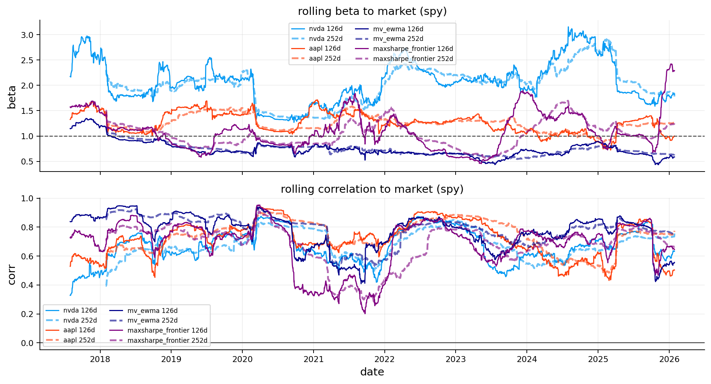
Now we can see the difference between our models and our picked stocks. both of our models have beta under 1 and both the stocks have over 1 beta. this means that the risk of these stocks are more dependent on market risk than the diversified portfolios. all the 4 objects have positive alpha which means they all have more returns that can’t be explained by market return and can be interpreted as outperformance of these objects relative to S&P 500. correlation of all the objects to SPY are high through time and MaxSharpe has some times that has higher than 1 beta, but MinVar EWMA has less than 1 beta almost all the time and is the only object with less than one up and down capture, but this object moves with market a lot due to correlation and R2 and var share.
11) risk attribution
We explained this in last notebook. now we repeat it and add another part. for our portfolios we are looking for the assets that have the most share of portfolios risk.
11.1 volatility attribution (covariance-based)
If portfolio weights are \(w\) and covariance matrix is \(\Sigma\). portfolio volatility is:
\[ \sigma_p = \sqrt{w^\top \Sigma w} \]
the marginal contribution to risk (mrc) of asset \(i\) is:
\[ \text{mrc}_i = \frac{(\Sigma w)_i}{\sigma_p} \]
the component contribution is:
\[ \text{rc}_i = w_i\,\text{mrc}_i \]
and the contributions sum to total volatility:
\[ \sum_i \text{rc}_i = \sigma_p \]
this tells us which names drive most of the volatility.
11.2 es attribution
for expected shortfall at level \(\alpha\), identify the set of tail days:
\[ \mathcal{t}_\alpha = \{t : r_{p,t} \le q_\alpha(r_p)\} \]
a simple scenario-based contribution approximation is:
\[ \text{es contrib}_i \approx -\frac{1}{|\mathcal{t}_\alpha|}\sum_{t \in \mathcal{t}_\alpha} w_i r_{i,t} \]
so the largest contributors are the positions that lose the most on the worst portfolio days.
port_info = {
"MinVar EWMA": (res_minvar, "EWMA"),
"MS-FG EWMA Mom": (res_frontier, "EWMA"),
}
vol_contrib = {}
es_contrib = {}
overlap_rows = []
for pname, (res, cov_key) in port_info.items():
dt = res.weights.index[-1]
st = cache[dt]
tickers = st["tickers"]
w = res.weights.loc[dt].reindex(tickers).fillna(0.0).to_numpy(float)
w = w / w.sum()
cov = st["cov_ann_map"][cov_key]
port_vol = np.sqrt(float(w @ cov @ w))
m = cov @ w
rc = pd.Series(w * m / port_vol, index=tickers).sort_values(ascending=False)
vol_contrib[pname] = rc
window = st.get("R_cov", st.get("window"))
x = pd.DataFrame(window, columns=tickers)[tickers].to_numpy(float)
rp = x @ w
q = np.quantile(rp, 0.05)
mask = rp <= q
esc = pd.Series(-(x[mask] * w).mean(axis=0), index=tickers).sort_values(ascending=False)
es_contrib[pname] = esc
ov = len(set(rc.head(10).index).intersection(set(esc.head(10).index)))
overlap_rows.append({"portfolio": pname, "top10_overlap_count": ov})
overlap_tbl = pd.DataFrame(overlap_rows).set_index("portfolio")display(overlap_tbl)| top10_overlap_count | |
|---|---|
| portfolio | |
| MinVar EWMA | 8 |
| MS-FG EWMA Mom | 9 |
for both strategies, 9 of top 10 contributions seem to be the same in Volatility and ES contributions. but the order might be different.
fig, axes = plt.subplots(1, 2, figsize=(12, 3.5))
for ax, pname in zip(axes, port_info.keys()):
top = vol_contrib[pname].head(10).sort_values()
ax.barh(top.index, top.values)
ax.set_title(f"Vol RC - {pname}")
ax.set_xlabel("component contribution (ann vol)")
plt.tight_layout()
plt.show()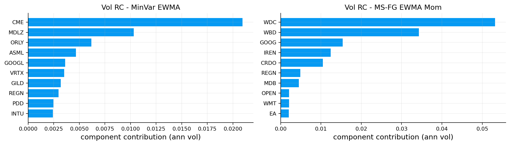
fig, axes = plt.subplots(1, 2, figsize=(12, 3.5))
for ax, pname in zip(axes, port_info.keys()):
top = es_contrib[pname].head(10).sort_values()
ax.barh(top.index, top.values)
ax.set_title(f"ES RC - {pname}")
ax.set_xlabel("scenario-based contribution (daily loss)")
plt.tight_layout()
plt.show()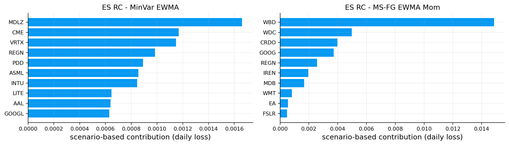
12) correlation and diversification (object-to-object)
correlation is a core ingredient of diversification. for two return series \(x_t\) and \(y_t\):
\[ \rho_{x,y} = \frac{\text{cov}(x,y)}{\sigma_x\sigma_y} \]
we compute the correlation matrix across objects and visualize it as a heatmap.
- \(\rho \approx 1\): objects move together (low diversification benefit)
- \(\rho \approx 0\): movements are mostly independent
- \(\rho < 0\): objects move in opposite direction, and we can hedge the other in some regimes (so rare in stock market)
from quantfinlab.plotting.curves import choose_heatmap_cmap
corr = pd.DataFrame({k: pd.Series(v) for k, v in obj.items()}).dropna().corr()
fig, ax = plt.subplots(1, 1, figsize=(6.5, 5.5))
im = ax.imshow(corr.values, vmin=-1, vmax=1, cmap=choose_heatmap_cmap("correlation"))
ax.set_xticks(range(len(corr.columns)))
ax.set_yticks(range(len(corr.index)))
ax.set_xticklabels(corr.columns, rotation=45, ha="right")
ax.set_yticklabels(corr.index)
ax.set_title("correlation matrix (daily returns)")
for i in range(corr.shape[0]):
for j in range(corr.shape[1]):
ax.text(j, i, f"{corr.values[i, j]:.2f}", ha="center", va="center", fontsize=10, color="white")
fig.colorbar(im, ax=ax, fraction=0.046, pad=0.04)
plt.tight_layout()
plt.show()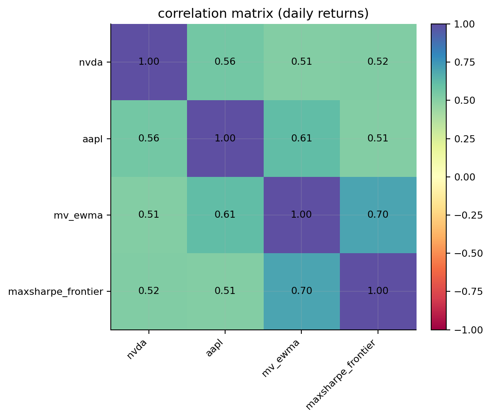
Implementation with Quantfinlab
We can implement the final library-composed workflow in two ways:
- US data with transparent atomic risk functions.
- HKEX data with the compact full risk report API.
In both cases, the Project 2 finalist portfolio names are listed explicitly. The notebook builds those known finalists directly instead of running the full grid search again and re-selecting winners.
1) Using manual functions for known US best portfolios (functions for risk measures and plots)
import warnings
import matplotlib.pyplot as plt
import numpy as np
import pandas as pd
from IPython.display import display
from quantfinlab.dataio import load_ohlcv, load_yfinance_panel
from quantfinlab.portfolio import covariance, expected_returns, optimizers, universe, walkforward
from quantfinlab.risk import (
capm, contributions,
correlation, distribution,
drawdown, performance,
stress, var, var_backtesting)
from quantfinlab.plotting import risk as risk_plots
warnings.filterwarnings("ignore")
rf_annual = 0.04
rf_daily = (1.0 + rf_annual) ** (1.0 / 252.0) - 1.0
us_finalists = ["EW", "MinVar EWMA", "MinVar Samp",
"MV EWMA Mom", "MV EWMA BSM",
"Ridge EWMA Mom", "MS EWMA Mom", "MS-FG EWMA Mom"]
us_strategy_specs = [
{"name": "EW", "optimizer": "EW"},
{"name": "MinVar EWMA", "optimizer": "MinVar", "cov_model": "EWMA"},
{"name": "MinVar Samp", "optimizer": "MinVar", "cov_model": "Sample"},
{"name": "MV EWMA Mom", "optimizer": "MV", "cov_model": "EWMA", "mu_model": "Momentum"},
{"name": "MV EWMA BSM", "optimizer": "MV", "cov_model": "EWMA", "mu_model": "BayesSteinMomentum"},
{"name": "Ridge EWMA Mom", "optimizer": "RidgeMV", "cov_model": "EWMA", "mu_model": "Momentum"},
{"name": "MS EWMA Mom", "optimizer": "MaxSharpe", "cov_model": "EWMA", "mu_model": "Momentum"},
{"name": "MS-FG EWMA Mom", "optimizer": "FrontierGrid", "cov_model": "EWMA", "mu_model": "Momentum"}]
panels = load_yfinance_panel(
"../data/nasdaq_close_volume.parquet",
source="yfinance_export",
fields=("close", "volume"),
date_col="Date")
close_prices, volumes = universe.clean_close_volume_panels(
panels["close"], panels["volume"], start="2016-01-01")
returns = universe.prices_to_returns(close_prices)
rebal_dates = universe.make_rebalance_dates(
returns.index, freq="ME", min_history_days=252)
stack = walkforward.run_walkforward_grid(
returns=returns, close=close_prices, volume=volumes,
rebalance_dates=rebal_dates,
cov_models={"EWMA": covariance.ewma_covariance, "Sample": covariance.sample_covariance},
mu_models={"Momentum": expected_returns.momentum_mu,
"BayesSteinMomentum": expected_returns.bayes_stein_momentum_mu},
optimizers={
"EW": optimizers.equal_weight,
"MinVar": optimizers.minimum_variance,
"MV": optimizers.mean_variance,
"RidgeMV": optimizers.ridge_mean_variance,
"MaxSharpe": optimizers.max_sharpe_slsqp,
"FrontierGrid": optimizers.max_sharpe_frontier_grid},
strategy_specs=us_strategy_specs,
rf_daily=rf_daily,
annualization=252)
results = {name: stack.backtests[name] for name in us_finalists}
display(stack.results.loc[us_finalists].round(4))
cache = dict(stack.cache)
def _default_cov_key(state_cache):
for state in state_cache.values():
cov_map = state.get("cov_ann_map", {})
for preferred in ("LedoitWolf", "OAS", "Sample", "EWMA", "ledoitwolf", "oas", "sample", "ewma"):
if preferred in cov_map:
return preferred
if cov_map:
return next(iter(cov_map.keys()))
return None
def _cov_key_for_backtest(result, fallback):
meta = dict(result.metadata or {})
return meta.get("cov_model") or fallback
fallback_cov_key = _default_cov_key(cache)
cov_key_for_rc = {name: _cov_key_for_backtest(res, fallback_cov_key) for name, res in results.items()}
common_idx = None
for res in results.values():
idx_res = pd.DatetimeIndex(res.net_returns.index)
common_idx = idx_res if common_idx is None else common_idx.intersection(idx_res)
if common_idx is None or len(common_idx) == 0:
raise ValueError("No overlapping index across US finalist returns.")
objects = {name: res.net_returns.reindex(common_idx).fillna(0.0) for name, res in results.items()}
spy = load_ohlcv("../data/spy_ohlcv.csv", source="yfinance_csv", fields=("close",))
market_ret = spy["close"].pct_change(fill_method=None).reindex(common_idx).fillna(0.0)
portfolios = {
name: {"backtest": results[name], "state_cache": cache, "cov_key": cov_key_for_rc[name]}
for name in results.keys()}
perf_tbl = performance.performance_table(objects, rf_daily=rf_daily, annualization=252)
shape_tbl = distribution.tail_shape_table(objects)
dd_summary_tbl = drawdown.drawdown_summary_table(objects)
dd_episodes_tbl = drawdown.drawdown_episodes_table(objects, top_n=1)
var_es_tbl = var.var_es_table(objects, alpha=0.05, methods=["hist", "cf", "fhs"])
var_bt_tbl = var_backtesting.var_backtest_table(objects, alpha=0.05, methods=["hist", "cf", "fhs"], lookback=252)
stress_windows = {
"2018_q4": ("2018-10-01", "2018-12-31"),
"2020_covid": ("2020-02-20", "2020-04-30"),
"2022_inflation": ("2022-01-03", "2022-10-31")}
stress_tbl = stress.stress_table(objects, windows=stress_windows, worst_only=True)
stress_tbl_full = stress.stress_table(objects, windows=stress_windows, worst_only=False)
capm_tbl, capm_roll = capm.capm_table(objects, market_ret=market_ret, rf_daily=rf_daily, rolling=[126, 252])
corr_tbl = correlation.corr_matrix(objects)
vol_rc_tbl, es_rc_tbl, overlap_tbl = contributions.attribution_tables(portfolios, es_alpha=0.05, top_k=10)
display(perf_tbl.round(4))
display(shape_tbl.round(4))
display(dd_summary_tbl.round(4))
display(dd_episodes_tbl.round(4))
display(var_es_tbl.round(4))
display(var_bt_tbl.round(4))
display(stress_tbl.round(4))
display(capm_tbl.round(4))
display(overlap_tbl)
fig, axes = plt.subplots(4, 2, figsize=(18, 20), constrained_layout=True)
risk_plots.plot_nav_compare(ax=axes[0, 0], objects=objects, title="Cumulative NAV - US finalists")
risk_plots.plot_drawdown_compare_objects(ax=axes[0, 1], objects=objects, title="Drawdowns - US finalists")
risk_plots.plot_rolling_volatility(ax=axes[1, 0], objects=objects, windows=[20, 60, 252], annualization=252, title="Rolling volatility")
risk_plots.plot_var_backtest_summary(ax=axes[1, 1], var_backtest_table=var_bt_tbl, title="VaR backtest accuracy")
risk_plots.plot_stress_heatmap(ax=axes[2, 0], stress_table=stress_tbl_full, title="Historical stress windows")
risk_plots.plot_rolling_beta(ax=axes[2, 1], rolling_beta=capm_roll, title="Rolling CAPM beta")
risk_plots.plot_corr_heatmap(ax=axes[3, 0], corr=corr_tbl, title="Correlation matrix")
risk_plots.plot_contribution_bars(ax=axes[3, 1], contribution_table=vol_rc_tbl, top_k=10, title="Top volatility contributors")
plt.show()
print("US finalists in risk analysis:", us_finalists)| Optimizer | Mu model | Covariance model | CAGR | Vol | Sharpe | Max Drawdown | Calmar | Sortino | Turnover | Total Turnover | Cost Drag | Effective N | Fallbacks | |
|---|---|---|---|---|---|---|---|---|---|---|---|---|---|---|
| Strategy | ||||||||||||||
| EW | EW | - | - | 0.1467 | 0.2530 | 0.5128 | -0.4616 | 0.3178 | 0.6735 | 0.0496 | 5.2124 | 0.0032 | 100.0000 | 0 |
| MinVar EWMA | MinVar | - | EWMA | 0.1703 | 0.1545 | 0.8413 | -0.2868 | 0.5937 | 1.0569 | 0.0825 | 8.6666 | 0.0047 | 14.6727 | 0 |
| MinVar Samp | MinVar | - | Sample | 0.1531 | 0.1610 | 0.7211 | -0.3009 | 0.5089 | 0.8829 | 0.0251 | 2.6315 | 0.0014 | 14.4339 | 0 |
| MV EWMA Mom | MV | Momentum | EWMA | 0.1652 | 0.1502 | 0.8321 | -0.2869 | 0.5755 | 1.0287 | 0.1891 | 19.8510 | 0.0119 | 11.0928 | 0 |
| MV EWMA BSM | MV | BayesSteinMomentum | EWMA | 0.1639 | 0.1498 | 0.8263 | -0.2875 | 0.5700 | 1.0221 | 0.1869 | 19.6290 | 0.0118 | 11.1398 | 0 |
| Ridge EWMA Mom | RidgeMV | Momentum | EWMA | 0.1634 | 0.1506 | 0.8202 | -0.2861 | 0.5713 | 1.0009 | 0.1736 | 18.2317 | 0.0108 | 17.4597 | 0 |
| MS EWMA Mom | MaxSharpe | Momentum | EWMA | 0.2425 | 0.2563 | 0.8258 | -0.4063 | 0.5969 | 1.0625 | 0.2862 | 30.0521 | 0.0152 | 7.6142 | 0 |
| MS-FG EWMA Mom | FrontierGrid | Momentum | EWMA | 0.2818 | 0.2944 | 0.8612 | -0.4422 | 0.6372 | 1.1450 | 0.3717 | 39.0313 | 0.0170 | 6.2737 | 0 |
| ann_return | ann_vol | sharpe | sortino | |
|---|---|---|---|---|
| object | ||||
| EW | 0.1467 | 0.2530 | 0.5128 | 0.7206 |
| MS EWMA Mom | 0.2434 | 0.2563 | 0.8258 | 1.1895 |
| MS-FG EWMA Mom | 0.2830 | 0.2944 | 0.8612 | 1.2383 |
| MV EWMA BSM | 0.1638 | 0.1498 | 0.8263 | 1.1768 |
| MV EWMA Mom | 0.1651 | 0.1502 | 0.8321 | 1.1843 |
| MinVar EWMA | 0.1702 | 0.1545 | 0.8413 | 1.2069 |
| MinVar Samp | 0.1529 | 0.1610 | 0.7211 | 1.0202 |
| Ridge EWMA Mom | 0.1634 | 0.1506 | 0.8202 | 1.1624 |
| skew | excess_kurtosis | tail_ratio_95_05 | worst_1d | worst_5d_avg | worst_10d_avg | |
|---|---|---|---|---|---|---|
| object | ||||||
| EW | -0.1445 | 6.5338 | 0.8584 | -0.1239 | -0.0852 | -0.0729 |
| MS EWMA Mom | -0.1235 | 8.4804 | 1.0189 | -0.1191 | -0.0974 | -0.0826 |
| MS-FG EWMA Mom | -0.1685 | 5.6565 | 1.0078 | -0.1248 | -0.1028 | -0.0855 |
| MV EWMA BSM | -0.4121 | 18.1061 | 1.0122 | -0.0892 | -0.0738 | -0.0585 |
| MV EWMA Mom | -0.4309 | 18.0276 | 1.0246 | -0.0889 | -0.0739 | -0.0586 |
| MinVar EWMA | -0.3344 | 19.3083 | 1.0040 | -0.0974 | -0.0751 | -0.0571 |
| MinVar Samp | -0.4201 | 18.2526 | 1.0097 | -0.1112 | -0.0736 | -0.0595 |
| Ridge EWMA Mom | -0.5183 | 19.7590 | 0.9974 | -0.0991 | -0.0750 | -0.0590 |
| max_dd | longest_dd_days | avg_recovery_days | ulcer_index | |
|---|---|---|---|---|
| object | ||||
| EW | -0.4616 | 771 | 18.1759 | 0.1692 |
| MS EWMA Mom | -0.4063 | 977 | 24.1882 | 0.1894 |
| MS-FG EWMA Mom | -0.4422 | 977 | 25.3415 | 0.2103 |
| MV EWMA BSM | -0.2875 | 259 | 12.2278 | 0.0444 |
| MV EWMA Mom | -0.2869 | 255 | 12.1258 | 0.0429 |
| MinVar EWMA | -0.2868 | 153 | 12.4774 | 0.0438 |
| MinVar Samp | -0.3009 | 269 | 13.3724 | 0.0522 |
| Ridge EWMA Mom | -0.2861 | 259 | 11.6463 | 0.0445 |
| object | start | end | depth | duration | |
|---|---|---|---|---|---|
| 0 | EW | 2021-11-09 | 2024-12-03 | -0.4616 | 771 |
| 1 | MinVar EWMA | 2020-02-19 | 2020-05-28 | -0.2868 | 70 |
| 2 | MinVar Samp | 2020-02-19 | 2020-07-14 | -0.3009 | 102 |
| 3 | MV EWMA Mom | 2020-02-21 | 2020-05-15 | -0.2869 | 60 |
| 4 | MV EWMA BSM | 2020-02-21 | 2020-05-15 | -0.2875 | 60 |
| 5 | Ridge EWMA Mom | 2020-02-21 | 2020-05-15 | -0.2861 | 60 |
| 6 | MS EWMA Mom | 2021-03-16 | 2025-02-03 | -0.4063 | 977 |
| 7 | MS-FG EWMA Mom | 2021-03-16 | 2025-02-03 | -0.4422 | 977 |
| hist_var5 | hist_es5 | cf_var5 | cf_es5 | fhs_var5 | fhs_es5 | |
|---|---|---|---|---|---|---|
| object | ||||||
| EW | 0.0267 | 0.0378 | 0.0241 | 0.0490 | 0.0197 | 0.0281 |
| MS EWMA Mom | 0.0239 | 0.0380 | 0.0234 | 0.0538 | 0.0321 | 0.0472 |
| MS-FG EWMA Mom | 0.0293 | 0.0437 | 0.0281 | 0.0544 | 0.0367 | 0.0512 |
| MV EWMA BSM | 0.0127 | 0.0212 | 0.0125 | 0.0461 | 0.0092 | 0.0136 |
| MV EWMA Mom | 0.0128 | 0.0213 | 0.0126 | 0.0462 | 0.0092 | 0.0135 |
| MinVar EWMA | 0.0133 | 0.0218 | 0.0124 | 0.0490 | 0.0086 | 0.0132 |
| MinVar Samp | 0.0137 | 0.0233 | 0.0135 | 0.0499 | 0.0098 | 0.0151 |
| Ridge EWMA Mom | 0.0129 | 0.0215 | 0.0125 | 0.0491 | 0.0083 | 0.0127 |
| breach_count | breach_rate | coverage_error | abs_coverage_error | longest_breach_streak | avg_gap_days | kupiec_p | christoffersen_p | quantile_loss | accuracy_rank | accuracy_score | is_best | ||
|---|---|---|---|---|---|---|---|---|---|---|---|---|---|
| object | method | ||||||||||||
| EW | cf | 133 | 0.0662 | 0.0162 | 0.0162 | 3 | 15.1515 | 0.0015 | 0.0030 | 0.0020 | 3.0 | 0.0769 | False |
| fhs | 119 | 0.0592 | 0.0092 | 0.0092 | 3 | 16.9492 | 0.0647 | 0.0127 | 0.0018 | 1.0 | 0.2000 | True | |
| hist | 128 | 0.0637 | 0.0137 | 0.0137 | 3 | 15.4409 | 0.0067 | 0.0033 | 0.0020 | 2.0 | 0.1111 | False | |
| MS EWMA Mom | cf | 119 | 0.0592 | 0.0092 | 0.0092 | 3 | 16.8814 | 0.0647 | 0.0048 | 0.0020 | 3.0 | 0.0833 | False |
| fhs | 113 | 0.0562 | 0.0062 | 0.0062 | 3 | 17.5089 | 0.2074 | 0.0048 | 0.0019 | 1.0 | 0.1429 | True | |
| hist | 115 | 0.0572 | 0.0072 | 0.0072 | 3 | 17.3596 | 0.1450 | 0.0175 | 0.0020 | 2.0 | 0.1250 | False | |
| MS-FG EWMA Mom | cf | 117 | 0.0582 | 0.0082 | 0.0082 | 3 | 17.0603 | 0.0983 | 0.0233 | 0.0023 | 2.0 | 0.1000 | False |
| fhs | 110 | 0.0548 | 0.0048 | 0.0048 | 3 | 17.9908 | 0.3353 | 0.1139 | 0.0021 | 1.0 | 0.2000 | True | |
| hist | 118 | 0.0587 | 0.0087 | 0.0087 | 3 | 16.9145 | 0.0801 | 0.0109 | 0.0023 | 3.0 | 0.0833 | False | |
| MV EWMA BSM | cf | 116 | 0.0577 | 0.0077 | 0.0077 | 3 | 16.8000 | 0.1199 | 0.0003 | 0.0012 | 2.0 | 0.1000 | False |
| fhs | 106 | 0.0528 | 0.0028 | 0.0028 | 2 | 18.4000 | 0.5732 | 0.0734 | 0.0011 | 1.0 | 0.2000 | True | |
| hist | 119 | 0.0592 | 0.0092 | 0.0092 | 3 | 16.3729 | 0.0647 | 0.0002 | 0.0012 | 3.0 | 0.0833 | False | |
| MV EWMA Mom | cf | 117 | 0.0582 | 0.0082 | 0.0082 | 3 | 16.6552 | 0.0983 | 0.0004 | 0.0012 | 3.0 | 0.0769 | False |
| fhs | 103 | 0.0513 | 0.0013 | 0.0013 | 2 | 18.9412 | 0.7949 | 0.1176 | 0.0011 | 1.0 | 0.2000 | True | |
| hist | 115 | 0.0572 | 0.0072 | 0.0072 | 3 | 16.9474 | 0.1450 | 0.0024 | 0.0012 | 2.0 | 0.1111 | False | |
| MinVar EWMA | cf | 103 | 0.0513 | 0.0013 | 0.0013 | 3 | 19.0686 | 0.7949 | 0.0000 | 0.0012 | 2.0 | 0.1250 | False |
| fhs | 108 | 0.0538 | 0.0038 | 0.0038 | 2 | 18.5794 | 0.4449 | 0.0919 | 0.0011 | 1.0 | 0.1429 | True | |
| hist | 116 | 0.0577 | 0.0077 | 0.0077 | 3 | 16.9217 | 0.1199 | 0.0000 | 0.0012 | 3.0 | 0.0833 | False | |
| MinVar Samp | cf | 88 | 0.0438 | -0.0062 | 0.0062 | 3 | 21.8046 | 0.1933 | 0.0000 | 0.0012 | 3.0 | 0.0833 | False |
| fhs | 110 | 0.0548 | 0.0048 | 0.0048 | 2 | 18.2294 | 0.3353 | 0.2286 | 0.0011 | 1.0 | 0.2000 | True | |
| hist | 110 | 0.0548 | 0.0048 | 0.0048 | 3 | 17.7615 | 0.3353 | 0.0003 | 0.0013 | 2.0 | 0.1250 | False | |
| Ridge EWMA Mom | cf | 103 | 0.0513 | 0.0013 | 0.0013 | 3 | 18.9412 | 0.7949 | 0.0007 | 0.0012 | 2.0 | 0.1111 | False |
| fhs | 107 | 0.0533 | 0.0033 | 0.0033 | 2 | 18.8679 | 0.5068 | 0.0822 | 0.0011 | 1.0 | 0.1429 | True | |
| hist | 114 | 0.0567 | 0.0067 | 0.0067 | 3 | 17.0973 | 0.1741 | 0.0056 | 0.0012 | 3.0 | 0.0909 | False |
| window | cum_return | max_dd | worst_day | worst_week | |
|---|---|---|---|---|---|
| object | |||||
| EW | 2022_inflation | -0.3420 | -0.4022 | -0.0641 | -0.0944 |
| MS EWMA Mom | 2022_inflation | -0.1026 | -0.2054 | -0.0785 | -0.0712 |
| MS-FG EWMA Mom | 2022_inflation | -0.1814 | -0.2824 | -0.0857 | -0.1039 |
| MV EWMA BSM | 2018_q4 | -0.0534 | -0.1125 | -0.0294 | -0.0524 |
| MV EWMA Mom | 2018_q4 | -0.0526 | -0.1114 | -0.0293 | -0.0523 |
| MinVar EWMA | 2018_q4 | -0.0799 | -0.1237 | -0.0287 | -0.0572 |
| MinVar Samp | 2020_covid | -0.1219 | -0.3001 | -0.1112 | -0.1446 |
| Ridge EWMA Mom | 2018_q4 | -0.0651 | -0.1128 | -0.0311 | -0.0517 |
| alpha_daily | alpha_ann | beta | r2 | tracking_error | information_ratio | up_capture | down_capture | systematic_var_share | |
|---|---|---|---|---|---|---|---|---|---|
| object | |||||||||
| EW | -0.0001 | -0.0153 | 1.2247 | 0.8020 | 0.1200 | 0.0931 | 1.2870 | 1.3253 | 0.8020 |
| MS EWMA Mom | 0.0004 | 0.1059 | 0.9360 | 0.4564 | 0.1893 | 0.4917 | 1.0182 | 0.9133 | 0.4564 |
| MS-FG EWMA Mom | 0.0005 | 0.1465 | 0.9853 | 0.3833 | 0.2312 | 0.5838 | 1.1959 | 1.0734 | 0.3833 |
| MV EWMA BSM | 0.0002 | 0.0499 | 0.6334 | 0.6116 | 0.1154 | 0.0454 | 0.6328 | 0.5607 | 0.6116 |
| MV EWMA Mom | 0.0002 | 0.0509 | 0.6352 | 0.6124 | 0.1153 | 0.0554 | 0.6362 | 0.5634 | 0.6124 |
| MinVar EWMA | 0.0002 | 0.0538 | 0.6539 | 0.6133 | 0.1154 | 0.0988 | 0.6573 | 0.5819 | 0.6133 |
| MinVar Samp | 0.0001 | 0.0346 | 0.6924 | 0.6328 | 0.1130 | -0.0217 | 0.6701 | 0.6130 | 0.6328 |
| Ridge EWMA Mom | 0.0002 | 0.0458 | 0.6647 | 0.6662 | 0.1069 | 0.0469 | 0.6619 | 0.5949 | 0.6662 |
| top10_overlap_count | |
|---|---|
| portfolio | |
| EW | 5 |
| MS EWMA Mom | 10 |
| MS-FG EWMA Mom | 9 |
| MV EWMA BSM | 7 |
| MV EWMA Mom | 6 |
| MinVar EWMA | 8 |
| MinVar Samp | 8 |
| Ridge EWMA Mom | 6 |
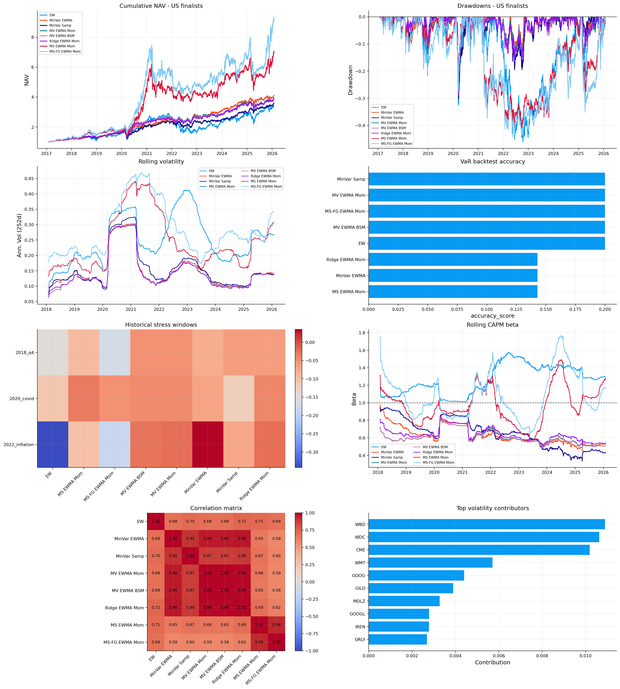
US finalists in risk analysis: ['EW', 'MinVar EWMA', 'MinVar Samp', 'MV EWMA Mom', 'MV EWMA BSM', 'Ridge EWMA Mom', 'MS EWMA Mom', 'MS-FG EWMA Mom']We can see from the U.S.results that the MinVar EWMA strategy remains one of the strongest candidates in risk terms. It has a volatility around 15.45%, Sharpe around 0.84, and max drawdown around -28.68%. The aggressive MaxSharpe and FrontierGrid strategies can generate stronger returns, but they also carry deeper and longer drawdowns.
The drawdown episode table is especially important. The MinVar and MV strategies have their worst drawdowns around the 2020 stress period, with durations closer to a few months. By contrast, the MaxSharpe and FrontierGrid strategies experience drawdown episodes that last around 977 days, starting in 2021 and extending into 2025. This is a major practical distinction. A strategy with high CAGR but a multi-year underwater period may be much harder to hold than a slightly lower-return strategy with faster drawdown recovery.
The tail-risk table also shows how strategy aggressiveness appears in the left tail. For example, the more aggressive strategies have larger historical VaR and ES magnitudes. MaxSharpe and FrontierGrid have historical ES around 3.8% and 4.4% daily in the reported output, while the lower volatility MV and MinVar strategies have historical ES around 2.1% to 2.3%.
The VaR backtest adds another layer. A good VaR model should not simply produce a large number. It should produce breach frequencies close to the target. The filtered historical simulation method performs well for many strategies, with breach rates near the expected \(5\%\) level.
where historical standardized residuals are rescaled by the current volatility estimate. This method keeps empirical tail behavior but adjusts the volatility level to the current regime.
So we can see that Annualized volatility and Sharpe ratio don’t show us some important sides of risk and we need to see if a portfolio has a fall from peak and how much is it and how long it takes to go back to peak and how much is the probability of extreme losses. These metrics show important details that makes us see the real performance of portfolios better tha just comparing Sharpe ratio.
2) Using the risk report function for known HKEX best portfolios
The data used in this part can be downloaded from here (Stooq HKEX daily market data).
For the CAPM benchmark we build the EW portfolio as a benchmark when needed, but the reported risk objects are exactly the listed HKEX finalists.
import warnings
import pandas as pd
from IPython.display import display
from quantfinlab.dataio import load_yfinance_panel
from quantfinlab.portfolio import covariance, expected_returns, optimizers, universe, walkforward
from quantfinlab.reports import risk_report
warnings.filterwarnings("ignore")
rf_annual = 0.04
rf_daily = (1.0 + rf_annual) ** (1.0 / 252.0) - 1.0
HK_FINALISTS = [
"EW",
"MinVar Samp",
"MinVar LW",
"MV EWMA BS",
"MV EWMA Mom",
"Ridge LW BS",
"MS LW BS",
"MS-FG LW BS",
]
HK_STRATEGY_SPECS = [
{"name": "EW", "optimizer": "EW"},
{"name": "MinVar Samp", "optimizer": "MinVar", "cov_model": "Sample"},
{"name": "MinVar LW", "optimizer": "MinVar", "cov_model": "LedoitWolf"},
{"name": "MV EWMA BS", "optimizer": "MV", "cov_model": "EWMA", "mu_model": "BayesStein"},
{"name": "MV EWMA Mom", "optimizer": "MV", "cov_model": "EWMA", "mu_model": "Momentum"},
{"name": "Ridge LW BS", "optimizer": "RidgeMV", "cov_model": "LedoitWolf", "mu_model": "BayesStein"},
{"name": "MS LW BS", "optimizer": "MaxSharpe", "cov_model": "LedoitWolf", "mu_model": "BayesStein"},
{"name": "MS-FG LW BS", "optimizer": "FrontierGrid", "cov_model": "LedoitWolf", "mu_model": "BayesStein"},
]
panels_hk = load_yfinance_panel(
"../data/hkex_close_volume.parquet",
source="hkex_close_volume",
fields=("close", "volume"))
close_prices_hk, volumes_hk = universe.clean_close_volume_panels(
panels_hk["close"], panels_hk["volume"], start="2016-01-01")
returns_hk = universe.prices_to_returns(close_prices_hk)
rebal_dates_hk = universe.make_rebalance_dates(returns_hk.index, freq="ME", min_history_days=252)
stack_hk = walkforward.run_walkforward_grid(
returns=returns_hk,
close=close_prices_hk,
volume=volumes_hk,
rebalance_dates=rebal_dates_hk,
cov_models={
"Sample": covariance.sample_covariance,
"LedoitWolf": covariance.ledoit_wolf_covariance,
"EWMA": covariance.ewma_covariance},
mu_models={"BayesStein": expected_returns.bayes_stein_mu, "Momentum": expected_returns.momentum_mu},
optimizers={
"EW": optimizers.equal_weight,
"MinVar": optimizers.minimum_variance,
"MV": optimizers.mean_variance,
"RidgeMV": optimizers.ridge_mean_variance,
"MaxSharpe": optimizers.max_sharpe_slsqp,
"FrontierGrid": optimizers.max_sharpe_frontier_grid},
strategy_specs=HK_STRATEGY_SPECS,
rf_daily=rf_daily,
annualization=252)
missing_hk = [name for name in HK_FINALISTS if name not in stack_hk.backtests]
if missing_hk:
raise KeyError(f"Missing expected HKEX finalist portfolios: {missing_hk}")
results_hk_all = dict(stack_hk.backtests)
results_hk = {name: results_hk_all[name] for name in HK_FINALISTS}
display(stack_hk.results.loc[HK_FINALISTS].round(4))
cache_hk = dict(stack_hk.cache)
def _default_cov_key(state_cache):
for state in state_cache.values():
cov_map = state.get("cov_ann_map", {})
for preferred in ("LedoitWolf", "OAS", "Sample", "EWMA", "ledoitwolf", "oas", "sample", "ewma"):
if preferred in cov_map:
return preferred
if cov_map:
return next(iter(cov_map.keys()))
return None
def _cov_key_for_backtest(result, fallback):
meta = dict(result.metadata or {})
return meta.get("cov_model") or fallback
fallback_cov_key_hk = _default_cov_key(cache_hk)
cov_key_for_rc_hk = {name: _cov_key_for_backtest(res, fallback_cov_key_hk) for name, res in results_hk.items()}
common_idx = None
for res in results_hk.values():
idx_res = pd.DatetimeIndex(res.net_returns.index)
common_idx = idx_res if common_idx is None else common_idx.intersection(idx_res)
if common_idx is None or len(common_idx) == 0:
raise ValueError("No overlapping index across HKEX finalist returns.")
objects_hk = {name: res.net_returns.reindex(common_idx).fillna(0.0) for name, res in results_hk.items()}
market_proxy = objects_hk["EW"]
portfolios_hk = {
name: {"backtest": results_hk[name], "state_cache": cache_hk, "cov_key": cov_key_for_rc_hk[name]}
for name in results_hk.keys()}
report_hk = risk_report(
objects=objects_hk,
market_ret=market_proxy,
rf_daily=rf_daily,
portfolios=portfolios_hk,
include={
"performance_tables": True,
"shape_tables": True,
"drawdowns": True,
"drawdown_episodes": True,
"var_es": True,
"var_backtest": True,
"stress": True,
"capm": True,
"rolling_beta": True,
"correlation": True,
"attribution": True,
"exec_bullets": True,
},
var_settings={"alpha": 0.05, "methods": ["hist", "cf", "fhs"], "lookback": 252},
backtest_settings={"alpha": 0.05, "methods": ["hist", "cf", "fhs"], "lookback": 252, "plot_method": "best"},
rolling_settings={"vol_windows": [20, 60, 252], "beta_windows": [126, 252]},
stress_settings={
"windows": {
"2018_q4": ("2018-10-01", "2018-12-31"),
"2020_covid": ("2020-02-20", "2020-04-30"),
"2022_inflation": ("2022-01-03", "2022-10-31"),
},
"worst_only": True,
"worst_by": "cum_return",
},
attribution_settings={"es_alpha": 0.05, "top_k": 5},
layout={"ncols": 4, "sharex": True, "sharey": True},
output={
"round_tables": 4,
"print_exec_bullets": True,
"display_tables": True,
"label_max_len": 16,
"hide_table_keys": [
"drawdown_episodes",
"stress",
"corr",
"attribution_overlap",
"attribution_vol",
"attribution_es",
],
"show_figures": True,
},
)
print("HKEX finalists in report:", HK_FINALISTS)
print("HKEX report tables:", sorted(report_hk.tables.keys()))| Optimizer | Mu model | Covariance model | CAGR | Vol | Sharpe | Max Drawdown | Calmar | Sortino | Turnover | Total Turnover | Cost Drag | Effective N | Fallbacks | |
|---|---|---|---|---|---|---|---|---|---|---|---|---|---|---|
| Strategy | ||||||||||||||
| EW | EW | - | - | 0.0763 | 0.2136 | 0.2690 | -0.4001 | 0.1907 | 0.3663 | 0.0424 | 4.6211 | 0.0032 | 100.0000 | 0 |
| MinVar Samp | MinVar | - | Sample | 0.0381 | 0.1379 | 0.0552 | -0.4350 | 0.0875 | 0.0732 | 0.0178 | 1.9429 | 0.0015 | 13.4652 | 0 |
| MinVar LW | MinVar | - | LedoitWolf | 0.0412 | 0.1382 | 0.0771 | -0.4070 | 0.1012 | 0.1027 | 0.0152 | 1.6606 | 0.0013 | 15.4898 | 0 |
| MV EWMA BS | MV | BayesStein | EWMA | 0.0865 | 0.1320 | 0.3981 | -0.2785 | 0.3106 | 0.4983 | 0.1944 | 21.1847 | 0.0145 | 9.9705 | 0 |
| MV EWMA Mom | MV | Momentum | EWMA | 0.0838 | 0.1327 | 0.3781 | -0.2927 | 0.2861 | 0.4717 | 0.1942 | 21.1697 | 0.0146 | 10.0254 | 0 |
| Ridge LW BS | RidgeMV | BayesStein | LedoitWolf | 0.0807 | 0.1445 | 0.3382 | -0.2772 | 0.2911 | 0.4311 | 0.0647 | 7.0501 | 0.0049 | 15.1786 | 0 |
| MS LW BS | MaxSharpe | BayesStein | LedoitWolf | 0.1723 | 0.2469 | 0.6108 | -0.3582 | 0.4810 | 0.7733 | 0.1971 | 21.4788 | 0.0106 | 7.5459 | 0 |
| MS-FG LW BS | FrontierGrid | BayesStein | LedoitWolf | 0.1996 | 0.2673 | 0.6699 | -0.3890 | 0.5132 | 0.8727 | 0.1611 | 17.5574 | 0.0078 | 7.2038 | 0 |
| ann_return | ann_vol | sharpe | sortino | |
|---|---|---|---|---|
| object | ||||
| EW | 0.0766 | 0.2136 | 0.2690 | 0.3744 |
| MS LW BS | 0.1726 | 0.2469 | 0.6108 | 0.8354 |
| MS-FG LW BS | 0.1998 | 0.2673 | 0.6699 | 0.9253 |
| MV EWMA BS | 0.0866 | 0.1320 | 0.3981 | 0.5383 |
| MV EWMA Mom | 0.0839 | 0.1327 | 0.3781 | 0.5103 |
| MinVar LW | 0.0411 | 0.1382 | 0.0771 | 0.1048 |
| MinVar Samp | 0.0380 | 0.1379 | 0.0552 | 0.0748 |
| Ridge LW BS | 0.0807 | 0.1445 | 0.3382 | 0.4535 |
| skew | excess_kurtosis | tail_ratio_95_05 | worst_1d | worst_5d_avg | worst_10d_avg | |
|---|---|---|---|---|---|---|
| object | ||||||
| EW | -0.4398 | 7.1888 | 0.9910 | -0.1245 | -0.0801 | -0.0647 |
| MS LW BS | -0.9488 | 9.0562 | 0.9722 | -0.1728 | -0.0934 | -0.0775 |
| MS-FG LW BS | -0.7664 | 6.8257 | 1.0042 | -0.1717 | -0.0981 | -0.0806 |
| MV EWMA BS | -1.0763 | 10.1463 | 1.0358 | -0.0883 | -0.0586 | -0.0470 |
| MV EWMA Mom | -1.0612 | 9.6106 | 1.0060 | -0.0861 | -0.0586 | -0.0480 |
| MinVar LW | -0.5904 | 4.9987 | 1.0216 | -0.0654 | -0.0539 | -0.0445 |
| MinVar Samp | -0.6200 | 5.1635 | 1.0144 | -0.0656 | -0.0542 | -0.0446 |
| Ridge LW BS | -1.0029 | 7.5390 | 0.9677 | -0.0919 | -0.0594 | -0.0485 |
| max_dd | longest_dd_days | avg_recovery_days | ulcer_index | |
|---|---|---|---|---|
| object | ||||
| EW | -0.4001 | 992 | 45.5870 | 0.1557 |
| MS LW BS | -0.3582 | 992 | 32.3906 | 0.1598 |
| MS-FG LW BS | -0.3890 | 888 | 32.4375 | 0.1835 |
| MV EWMA BS | -0.2785 | 1054 | 27.5541 | 0.0798 |
| MV EWMA Mom | -0.2927 | 724 | 27.9863 | 0.0866 |
| MinVar LW | -0.4070 | 1671 | 58.8056 | 0.1926 |
| MinVar Samp | -0.4350 | 1678 | 11.9189 | 0.2104 |
| Ridge LW BS | -0.2772 | 735 | 31.7692 | 0.0956 |
| hist_var5 | hist_es5 | cf_var5 | cf_es5 | fhs_var5 | fhs_es5 | |
|---|---|---|---|---|---|---|
| object | ||||||
| EW | 0.0203 | 0.0299 | 0.0214 | 0.0445 | 0.0123 | 0.0179 |
| MS LW BS | 0.0251 | 0.0372 | 0.0259 | 0.0572 | 0.0234 | 0.0330 |
| MS-FG LW BS | 0.0264 | 0.0396 | 0.0280 | 0.0558 | 0.0251 | 0.0347 |
| MV EWMA BS | 0.0121 | 0.0195 | 0.0140 | 0.0320 | 0.0082 | 0.0121 |
| MV EWMA Mom | 0.0122 | 0.0196 | 0.0141 | 0.0315 | 0.0080 | 0.0120 |
| MinVar LW | 0.0132 | 0.0201 | 0.0146 | 0.0264 | 0.0091 | 0.0133 |
| MinVar Samp | 0.0133 | 0.0202 | 0.0147 | 0.0266 | 0.0092 | 0.0138 |
| Ridge LW BS | 0.0142 | 0.0215 | 0.0157 | 0.0315 | 0.0094 | 0.0135 |
| breach_count | breach_rate | coverage_error | abs_coverage_error | longest_breach_streak | avg_gap_days | kupiec_p | christoffersen_p | quantile_loss | accuracy_rank | accuracy_score | is_best | ||
|---|---|---|---|---|---|---|---|---|---|---|---|---|---|
| object | method | ||||||||||||
| EW | cf | 91 | 0.0464 | -0.0036 | 0.0036 | 2 | 21.3000 | 0.4537 | 0.0295 | 0.0016 | 2.0 | 0.1000 | False |
| fhs | 98 | 0.0499 | -0.0001 | 0.0001 | 3 | 19.9278 | 0.9876 | 0.0769 | 0.0016 | 1.0 | 0.2000 | True | |
| hist | 109 | 0.0555 | 0.0055 | 0.0055 | 2 | 17.9074 | 0.2692 | 0.0205 | 0.0016 | 3.0 | 0.0833 | False | |
| MS LW BS | cf | 103 | 0.0525 | 0.0025 | 0.0025 | 3 | 18.9020 | 0.6182 | 0.2685 | 0.0019 | 2.0 | 0.1111 | False |
| fhs | 104 | 0.0530 | 0.0030 | 0.0030 | 2 | 18.7184 | 0.5483 | 0.8287 | 0.0018 | 1.0 | 0.1250 | True | |
| hist | 120 | 0.0611 | 0.0111 | 0.0111 | 3 | 16.2437 | 0.0285 | 0.8931 | 0.0019 | 3.0 | 0.1000 | False | |
| MS-FG LW BS | cf | 97 | 0.0494 | -0.0006 | 0.0006 | 3 | 20.0833 | 0.9050 | 0.3185 | 0.0021 | 2.0 | 0.1111 | False |
| fhs | 104 | 0.0530 | 0.0030 | 0.0030 | 2 | 18.7184 | 0.5483 | 0.8150 | 0.0020 | 1.0 | 0.1429 | True | |
| hist | 116 | 0.0591 | 0.0091 | 0.0091 | 3 | 16.8087 | 0.0720 | 0.6507 | 0.0020 | 3.0 | 0.0909 | False | |
| MV EWMA BS | cf | 85 | 0.0433 | -0.0067 | 0.0067 | 3 | 23.0238 | 0.1638 | 0.0002 | 0.0011 | 3.0 | 0.0833 | False |
| fhs | 108 | 0.0550 | 0.0050 | 0.0050 | 3 | 18.0748 | 0.3151 | 0.0065 | 0.0010 | 1.0 | 0.2000 | True | |
| hist | 110 | 0.0560 | 0.0060 | 0.0060 | 3 | 17.7431 | 0.2282 | 0.0001 | 0.0011 | 2.0 | 0.1000 | False | |
| MV EWMA Mom | cf | 83 | 0.0423 | -0.0077 | 0.0077 | 3 | 23.5854 | 0.1074 | 0.0001 | 0.0011 | 3.0 | 0.0769 | False |
| fhs | 113 | 0.0576 | 0.0076 | 0.0076 | 3 | 17.2679 | 0.1328 | 0.0002 | 0.0010 | 2.0 | 0.1250 | False | |
| hist | 104 | 0.0530 | 0.0030 | 0.0030 | 3 | 18.7670 | 0.5483 | 0.0003 | 0.0011 | 1.0 | 0.1667 | True | |
| MinVar LW | cf | 96 | 0.0489 | -0.0011 | 0.0011 | 3 | 20.2947 | 0.8232 | 0.0216 | 0.0011 | 2.0 | 0.0909 | False |
| fhs | 98 | 0.0499 | -0.0001 | 0.0001 | 3 | 19.9381 | 0.9876 | 0.1640 | 0.0011 | 1.0 | 0.2000 | True | |
| hist | 105 | 0.0535 | 0.0035 | 0.0035 | 3 | 18.5962 | 0.4828 | 0.1542 | 0.0011 | 2.0 | 0.0909 | False | |
| MinVar Samp | cf | 96 | 0.0489 | -0.0011 | 0.0011 | 3 | 20.2947 | 0.8232 | 0.0570 | 0.0011 | 2.0 | 0.1111 | False |
| fhs | 102 | 0.0520 | 0.0020 | 0.0020 | 3 | 19.0891 | 0.6919 | 0.7354 | 0.0011 | 1.0 | 0.1429 | True | |
| hist | 107 | 0.0545 | 0.0045 | 0.0045 | 3 | 18.2453 | 0.3660 | 0.0891 | 0.0011 | 3.0 | 0.0909 | False | |
| Ridge LW BS | cf | 90 | 0.0458 | -0.0042 | 0.0042 | 3 | 21.7303 | 0.3923 | 0.1658 | 0.0012 | 3.0 | 0.0769 | False |
| fhs | 106 | 0.0540 | 0.0040 | 0.0040 | 3 | 18.4190 | 0.4220 | 0.5685 | 0.0011 | 1.0 | 0.1429 | False | |
| hist | 104 | 0.0530 | 0.0030 | 0.0030 | 3 | 18.7767 | 0.5483 | 0.2797 | 0.0011 | 1.0 | 0.1429 | True |
| alpha_daily | alpha_ann | beta | r2 | tracking_error | information_ratio | up_capture | down_capture | systematic_var_share | |
|---|---|---|---|---|---|---|---|---|---|
| object | |||||||||
| EW | 0.0000 | 0.0000 | 1.0000 | 1.0000 | NaN | NaN | 1.0000 | 1.0000 | 1.0000 |
| MS LW BS | 0.0004 | 0.1087 | 0.8285 | 0.5136 | 0.1761 | 0.5303 | 0.9456 | 0.8616 | 0.5136 |
| MS-FG LW BS | 0.0005 | 0.1347 | 0.9164 | 0.5362 | 0.1829 | 0.6648 | 1.0409 | 0.9407 | 0.5362 |
| MV EWMA BS | 0.0001 | 0.0253 | 0.4803 | 0.6034 | 0.1387 | -0.0352 | 0.5014 | 0.4645 | 0.6034 |
| MV EWMA Mom | 0.0001 | 0.0228 | 0.4804 | 0.5979 | 0.1393 | -0.0523 | 0.5010 | 0.4661 | 0.5979 |
| MinVar LW | -0.0001 | -0.0192 | 0.5230 | 0.6537 | 0.1303 | -0.3591 | 0.5391 | 0.5410 | 0.6537 |
| MinVar Samp | -0.0001 | -0.0216 | 0.5127 | 0.6305 | 0.1336 | -0.3730 | 0.5262 | 0.5297 | 0.6305 |
| Ridge LW BS | 0.0001 | 0.0170 | 0.5568 | 0.6774 | 0.1253 | -0.0685 | 0.5931 | 0.5669 | 0.6774 |
- MS-FG LW BS has the highest realized Sharpe ratio.
- Least severe maximum drawdown: Ridge LW BS (-27.72%).
- Lower historical ES tail risk: MV EWMA BS (1.95%).
- Highest market beta: EW (1.00); lowest: MV EWMA BS (0.48).
- Potential VaR model instability (p<0.05): MV EWMA BS, MV EWMA Mom.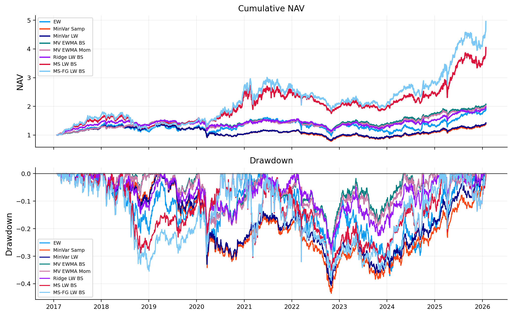
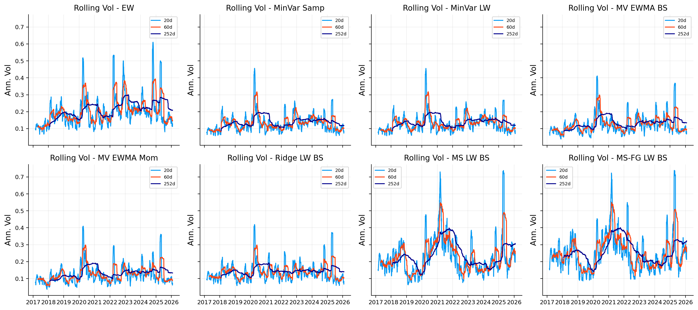
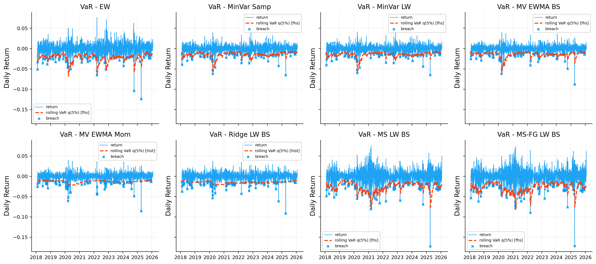
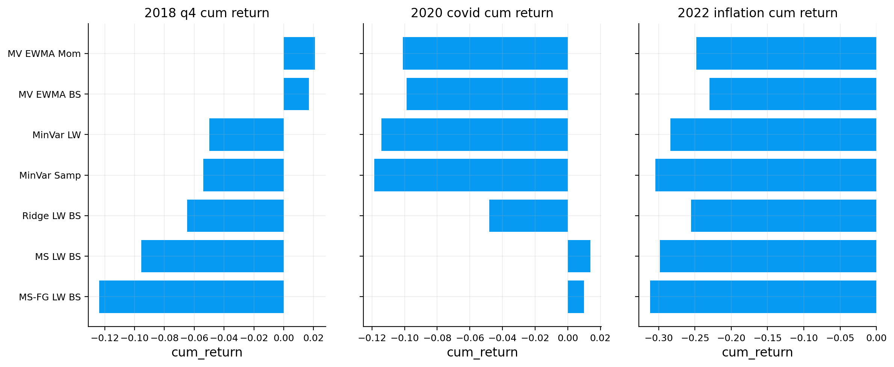
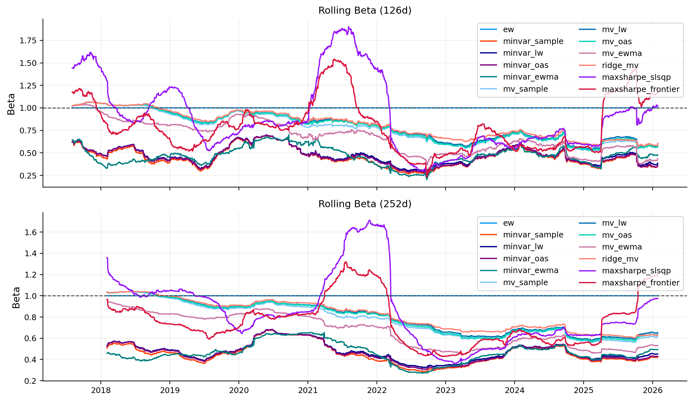
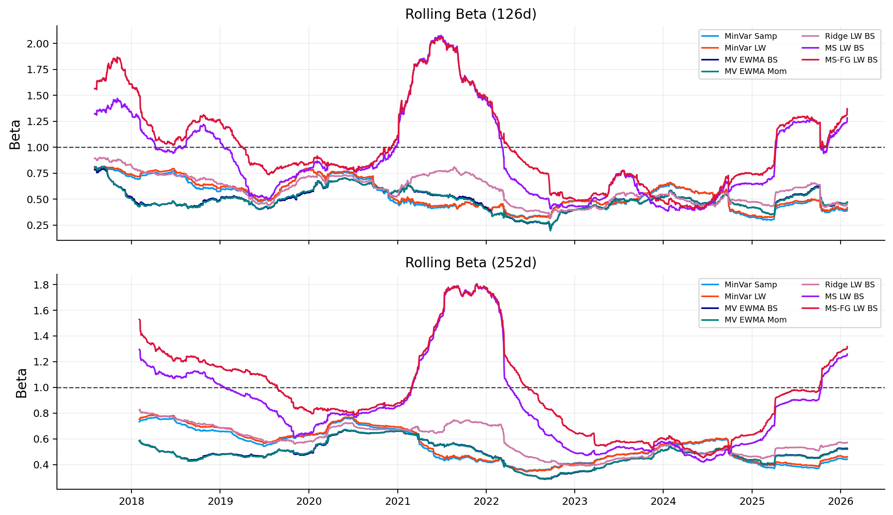
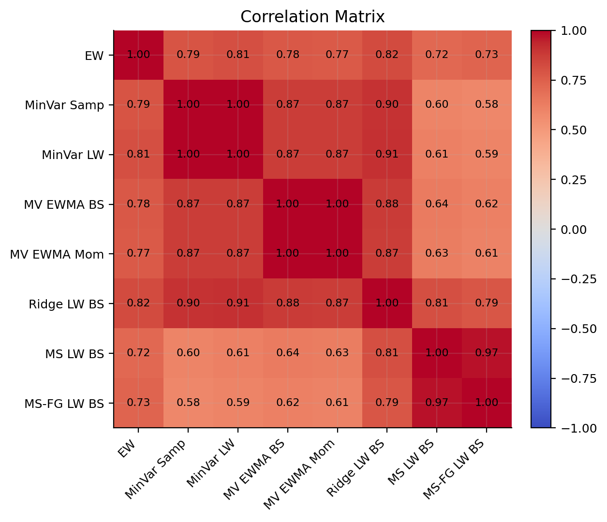
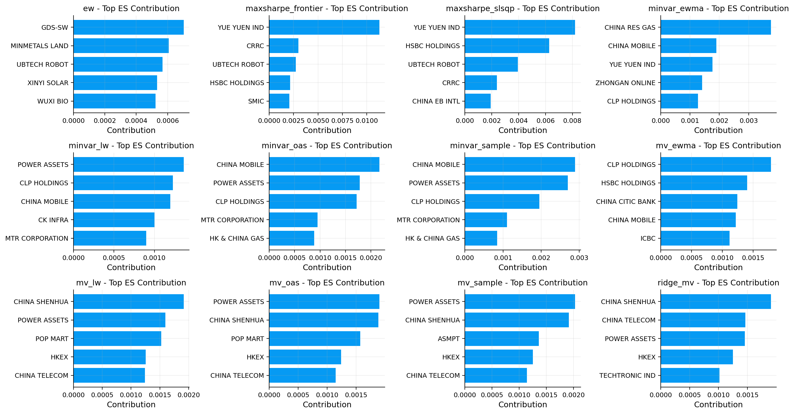
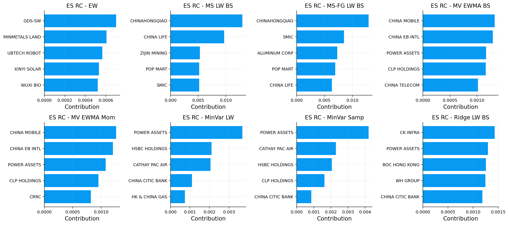
HKEX finalists in report: ['EW', 'MinVar Samp', 'MinVar LW', 'MV EWMA BS', 'MV EWMA Mom', 'Ridge LW BS', 'MS LW BS', 'MS-FG LW BS']
HKEX report tables: ['attribution_es', 'attribution_overlap', 'attribution_vol', 'capm', 'corr', 'drawdown_episodes', 'drawdown_summary', 'performance', 'shape', 'stress', 'var_backtest', 'var_es']As we can see, FrontierGrid has the highest realized Sharpe ratio and the highest CAGR, but it also has high volatility and a large drawdown. Ridge LedoitWolf BayesStein has the least severe max drawdown at around -27.72%, but its Sharpe is much lower than the aggressive strategies. MV EWMA BayesStein looks like a balanced middle candidate. It has lower return than MaxSharpe/FrontierGrid, but much lower volatility and drawdown.
The distribution table is very important because most strategies show negative skewness and high excess kurtosis. Negative skew means the left tail is heavier or more extreme than the right tail which means extreme losses are more likely to happen than exteme profits. Excess kurtosis means extreme observations (positive or negative) happen more often than a normal distribution would suggest. This is why normal VaR alone is not enough.
FrontierGrid has the highest beta, around 0.92, while MV EWMA BayesStein has a much lower beta, around 0.48. This tells us that the aggressive strategy is more market exposed (but still less than 1), while the balanced MV strategy is less dependent on benchmark direction. The CAPM alpha is also largest for FrontierGrid, but that alpha comes with much higher volatility and drawdown risk.
A high beta strategy may look good during positive and calm market regimes but can become vulnerable during broad market selloffs. That is why upside/downside capture and drawdown metrics can be important together with alpha.
The executive bullets summarize the decision problem:
- FrontierGrid has the highest realized Sharpe.
- Ridge LedoitWolf BayesStein has the least severe drawdown.
- MV EWMA BayesStein has lower historical ES tail risk.
- FrontierGrid has the highest market beta.
- Some strategies show potential VaR instability.
At the end, there is trade off everywhere when it comes to portfolios and we can’t say which portfolio is the true best and it completely depends on investor’s decision. If the investor wants maximum realized Sharpe, FrontierGrid is attractive. If the investor wants drawdown control, Ridge or MV BayesStein is more attractive. If the investor wants lower tail risk, MV BayesStein is the better candidate. If the investor wants lower beta, MV BayesStein again looks stronger than the aggressive strategies.